Sections of Lecture00: Problem Solving
- Problem Solving I
- Ask yourself: what do you want out of university and this class?
- University vs high school and your responsibility as a university student
- Introduction to abstraction (Abstraction I)
- Definition
- Examples
- What is it useful for?
1. Problem Solving I
- Don't give up (completely)
- Keep trying, even if you get it wrong
- Attempting the problem starts the trail of thought. Even if the solution is incorrect, there is at least something to build upon.
- Give up temporarily. If you do not know how to solve the problem yet, it is beneficial to step away from the problem for a while to let fresh ideas spring to mind.
- Be optimistic. Just because you cannot solve one problem does not mean you will not be able to solve the next (in the near future) - everything is 'hard' at first.
- Ask questions
- Clarify what you do know and what you don't know (very useful).
- If you know exactly what you don't know, you'll have a clear understanding of where to proceed next.
- Know what information you need to solve the problem.
- Break the larger problem up into sub-problems, and in solving these sub-problems build up towards the main issue.
- Always start with what you know. Start with the small and known and build up to the large, and as of yet, unknown.
- $$$$$$$$$$$$$
- Iterate and experiment with original and/or unique ways of solving the same problem. This is where mastery and understanding is derived.
- Check your solution with alternate methods. Ask yourself:
- Is there more than one way to answer the same problem?
- Is this way more efficient or less efficient than the original method?
- Is it intuitive or not? That is, when picking it up, does the solution immediately "make sense"? It is useful to have an intuitive solution to the problem as it makes for easy understanding.
- Are there simpler intuitive solutions than the one I have presented?
2. Ask yourself: what do I want out of university and this class?
- What do I want to gain during my time at university?
- Knowledge?
- Skills (both interpersonal and technical)?
- Friendships/connections?
- A skillset which will lead to a job?
- A skillset which will make you a more well-rounded individual?
- What personal aspects do I want to change in my time at UNSW?
- More motivated, organised, charismatic, etc.?
- What can UNSW do for me?
- How can I make my goals happen during my University years?
- What resources do I have?
- MOTIVATIONS (REASON) - WHY
- Why do I want to do with my time at UNSW?
- What motivates me to do what I want to do with my time at UNSW?
- Do I want to leave a legacy?
3. University vs high school and your responsibility as a university student
Comparison of University with High school
University | High school |
Self-reliant - Get help. Don't wait for it! Know who to go to for help (Student Central).
| Reliant on teachers to actively monitor students' progress and offer help where required. |
Independent learning - Take active responsibility for your studies.
| Learning "dependent" on teachers. |
More potential to think - Question your own, others' (and your professors') beliefs as well
- Introspect and look outwards too
| Less potential to innovate and form a personal opinion |
Less competitive - More focus on teamwork and cooperation
| Competitive (ranking system) |
Flexible | School hours are compulsory |
Must be skeptical of information | Must 'accept' information without question, and regurgitate information in an exam. - Sources are not usually cross-checked as it is assumed that they are a reliable source of information.
|
Learning at University
- Learning should be like reading a great book.
- You should want to keep on learning, to keep on mastering the next thing and next thing.
- Hence, you are doing Stirring Deeds of Britain's Sea Dogs Computing 1.
4. Introduction to abstraction (Abstraction I)
DEFINITION:
- Abstraction is the art of seeing things at different levels, each interpretation equally correct.
- The opposite of the abstract is the literal.
- The lower the level of abstraction, the more the object is presented in sophisticated, concrete detail
- To go to a lower level of abstraction, you "enhance".
- The higher the level of abstraction, the more the object is treated conceptually and as a whole
- To go to a higher level of abstraction, you "abstract".
Click below for: Examples of abstraction
What is abstraction useful for?
Solving problems:
- The level of abstraction which is most useful for each problem solver varies.
- Each problem solver has a different objective:
- A doctor would view a patient as a collection of organic cells/molecules or as a collection of digestive, skeletal, etc. systems in order to be able to diagnose a vitamin deficiency more easily (low level of abstraction)
- A friend would view the same person in a more complex light, factoring in their likes and dislikes in order to buy them an appropriate gift.
- The same applies to computer programming
- We write in a higher level of abstraction ("printf" makes some sense to the programmer, whereas to the computer it is a meaningless string of characters without compiling the code)
- The computer interprets instructions in explicit detail at a very low level of abstraction (binary combinations of 1 and 0, correspondingly 'on' and 'off').
Sections of Lecture01: Rules
- Abstraction II
- Definition of abstraction
- Levels of abstraction in a program
- Emergence (the "whole" is more meaningful than the parts)
- Definition of emergence
- Abstraction III
- Abstraction and explicit instructions
- The Player Piano (and an outline of what a computer is)
- A closer look at the 400x series chips
- Registers
- What the microprocessor does (stepwise)
- Looping
- Two byte instructions
- Overflowing
1. Abstraction II
Definition (see Abstraction I)
- Abstraction is the art of seeing things at different levels, each interpretation equally correct.
- The opposite of the abstract is the literal.
- The lower the level of abstraction, the more the object is presented in sophisticated, concrete detail
- The higher the level of abstraction, the more the object is treated conceptually and as a whole
Click below to see: Abstraction analogy: bagels
Levels of abstraction in a program
Applying this to programming, abstraction of the 'program' as a whole assists us with understanding how the program functions:
- The program has a net purpose; i.e. print out "[year] is a leap year!" if the input year is a leap year, "[year] is not a leap year!" if it isn't.
- The main function's purpose in this program is to prompt the user for an input year then call the isLeapYear function, while passing on the user-inputted value to the isLeapYear function.
- It also receives a return value from isLeapYear then tests whether this return value is 0 or 1 in order to determine whether to print (i) "[year] is a leap year" or (ii) "[year] is not a leap year."
- The isLeapYear function's purpose in the program is to test whether the inputted year is a leap year or not, then to pass the appropriate return value to main.
- initialises the variable 'year' with the value 2000
- printf("please enter the year you are interested in\n");
- prints: please enter the year you are interested in and creates a new line
- scans for an integer input from the user and stores this input in a variable named year
2. Emergence
Definition
- Emergence is a phenomena which occurs when the whole is greater/more meaningful than the sum of its parts.
Click below to see: Emergence examples
3. Abstraction III (Abstraction and explicit instructions)
- Computers can only interpret explicit instructions with no ambiguity.
- Data and process abstraction both have to be employed (laying the process/data out explicitly so the computer knows exactly what to do).
- The programmer must write many small steps to build up to a net function of the program.
- Computers can only interpret instructions in a low level of abstraction (you cannot tell the computer to "test whether the inputted year is a leap year" (high level of abstraction), you have to tell it painstakingly step-wise what to do).
- This is the role of the programmer: to interpret the intended purpose (high level of abstraction) and convert this to a low level of abstraction in their code.
4. The Player Piano (and an outline of what a computer is)
- The rules of a system are the things that tell you how to interpret an input/program
- Does the player piano have systematically compare each input (each slit) to a pre-set set of rules?
- A computer chip loops through memory, fetches instructions, and looks up what to do for each instruction (comparing each input to a pre-set set of rules).
- Computer chips: interpret literally, are unambiguous, are small and precise.
- A computer program is just a set of commands (low level of abstraction) and a chip compares each input command to a series of set rules and so sequentially executes each command line. Eventually, every line is executed (hopefully without errors) and so the program has been run.
5. A closer look at the 400x series chips
4001 Microchip
4002 Microchip
4003 Microchip
(1) Registers
Both IP and IS are special memory cells called registers (the "Register" is also a register).
They differ from the 'main memory' (table of memory cells we see in the emulators) as they are addressed by name not number. They are used by the microprocessor during execution.
- IP = Instruction Pointer (stores instruction location)
- Memory cells are addressed by number from 0 - 15; each memory cell also contains a number from 0-15 (in decimal notation) encoded in 4 binary digits.
- IS = Instruction Store (instruction placeholders are stored here)
- The instruction (number) from cell #IP is stored here.
- R = Register (stores the output from the commands)
- All special memory cells (registers) start at an initial value of 0
- A register such as R0 may contain a value from an external input
(2) What the microprocessor does (stepwise)
From experimentation:
- Loads cell #IP into IS
- Increases IP
- Executes the instruction in IS (which was stored in step 1)
- Compares the instruction in IS to a set of pre-defined rules
- Repeats
(3) Looping
The microprocessor will sequentially execute whatever is in the IS and will loop if there is no halt command. A program will loop if:
- A two byte instruction running on a true/false condition has been written as such that it causes the microprocessor to loop until the condition is satisfied.
- There is no halt command, which causes the program to loop indefinitely. You want to avoid this! As a general rule of thumb, every program should have some terminating condition.
(4) Two byte instructions
- Two-byte instructions take up 2 bytes (spaces) (in the 4000 series microchips, we have 4 bits or binary digits per byte of memory)
- The first byte is the "test" (much like the if statement in programming)
- The second byte has the cell number of the target cell if the test in the first byte (memory location) is true.
- If the first byte "test" is passed, the microprocessor loads the value inside the second byte (target cell number) into IP and so loads the instruction inside new cell #IP into IS then continues executing sequentially as normal.
- If the first byte's "test" does not pass, the entire two-byte instruction is skipped over.
Why are these so useful?
- The addition of two-byte instructions allowed the computer to make decisions based on elementary logic.
- Even a small function like a true/false argument can vastly increase the power of a program.
(5) Overflowing
- Overflows occur in the 400x series of microprocessor (and indeed in any microprocessor) as there is a limit to the decimal value you can store using 4 bits (= 4 binary digits) in a byte (one memory location)
- 1111 (= 15 in decimal notation) is the largest number that can be stored in a memory location.
- If you increment 1111 by 0001, then the memory location overflows as it cannot store a larger value than it's maximum possible value using 4 bits and so becomes 0000.
- On a macroscopic level, the program cannot 'remember' a value more than 15. Once it reaches 15, it 'wraps around' back to 0 upon the next increment of 1.
- Another name for this is "Arithmetic Overflow," however it's commonly shortened to just "Overflow."
- Applications of overflowing:
- Overflowing can be exploited for unusual solutions, such as printing out more of Pi in the "Pi activity" and even as a method of subtracting a number.
Sections of Lecture02: Puzzle Quest
- Problem solving with 4003
- Adding two numbers together using a 4003 chip (spoiler)
- What are bits and bytes?
- What are bits and bytes?
- Binary counting system explanation
- Bytes and bits: a summary
1. Problem solving with 4003
- Use intuitive methods where possible.
- Adding two numbers together using a 4003 chip can be visualised by having two piles of items and moving items from one pile to another.
Adding two numbers together using a 4003 chip (spoiler)
- When the machine is turned on, everything starts with 0
- Some memory is allocated simply to set values for the numbers that we need to add
- Move R0 to R1 (Take away from R0, add one to R1 and check if R0 = 0)
- When R0 = 0:
2. What are bits and bytes?
(1) What are bits and bytes?
- A byte is an area of memory that is addressable or can be referred to by name.
- How big it is can vary although it is often 8 bits (binary digits).
- A bit or binary digit is the smallest unit of "data" in a computer -one binary digit (bit) has only has 2 values: either 0 or 1.
- Each byte with 8 bits can contain a number (in decimal notation) between 0 and 255 (encoded in 8 binary digits, i.e. 255 = 11111111).
(2) Binary counting system explanation
This is how the binary counting system relates to the decimal notation values stored in bytes.
- For a chip that has 4-bits in each byte (such as the 400x processors), there are 16 possible different combinations of 0 and 1 (16 permutations).
- There are ALSO 16 possible numbers in decimal notation (0 - 15 can all be constructed using 4 bits).
- 0000 (0 in decimal notation (d.n.)), 0001 (1 in d.n.), 0010 (which is 2 in d.n.), 0011 (3 in d.n.), 0100 (4 in d.n.),
- 0101 (5 in d.n.), and so on until 1111 (15 in d.n.).
- Incrementing the maximum value 1111 (in 4 bit binary) by 0001 would cause the stored value to wrap around to 0000 (a.k.a. anoverflow).
- For a chip that has 8-bits in each byte, each memory storage component (a.k.a. each byte) has a much larger range of possible values that can be assigned into that memory location, from 00000000 (0 in decimal notation) all the way to 11111111 (255 in decimal notation).
(3) Bytes and bits: a summary
- 8 bits means that each byte (memory location) contains an integer between 0 -225 (in decimal notation), encoded into the 8binary digits contained within each byte.
- 4 bits means that each byte (memory location) contains an integer between 0-15 (in decimal notation), encoded into the 4binary digits contained within each byte.
Sections of Lecture03: First C Program
- Problem Solving II
- Techniques
- Tips
- Compiling: Converting between higher and lower level language
- Editing and compiling: how to?
- Essential compiling/editing
- General linux commands
- Essential aspects of C programs (I)
- Header comment (I)
- #include <filename.h>
- Main functions
- Statements
- 'Hello World' example program
1. Problem Solving II
More techniques:
- Figure out a method to find an answer (high level of abstraction).
- Self-test your functions!
- This involves coming up with an initial test that the program has to pass if it is right, and at the end, we can verify that it passes the test (see Lecture 16 - Testing).
- Include a reasonableness check (some assurance that your answer is a reasonable one)!
- Two reasonableness checks for these types of problems include:
- Compute the answer using two different methods and check that the two answers are close.
- Have an intuitive argument, e.g. by breaking the calculation into smaller sub-problems for each of which you have a strong intuition for the reasonableness of its answer.
More tips
- Try to see what you need to know in order to solve this problem. If you dive straight into the problem without any idea of what you need to do/know, you'll end up wasting a lot of time debugging or starting over again and again.
- You shouldn’t stop after getting an answer, keep going.
- Error Dangers - make sure you do the correct calculations!
- Make one small error in an initial calculation and the error can multiply out very easily.
- Write a function to test your code. Ensure that it is passed every time you run the program. It is useful when you change a bit of your code and you want to ascertain whether it still works (if it still compiles properly).
2. Compiling: Converting between higher and lower level language
- What is the role of a compiler?
- A compiler like gcc converts higher level language (i.e. C code) into machine code.
- What is compiling used for?
- The machine must receive instructions at a very low level of abstraction.
- The compiler converts your higher level language into an executable file (in machine code that the computer can understand).
- In order to compile source code called sourceCodeName.c into an executable file programName, we use the line below.
- gcc -Wall -Werror -O -o programName sourceCodeName.c
For an explanation of each of the elements of this line, see: Lecture 04 - Compiling, eventually.
Levels of abstraction
- The computer reads 'machine code'.
- We write in a high level of abstraction (C code) - the computer cannot understand this directly.
- C code is relatively meaningful to us because it reads like English.
3. Editing and other Linux commands
- Two simple c language editors: pico & nano
- Create the c editing file by typing "nano first.c" (the .c bit shows that this file type is c sourcecode, whereas first is the name of the program).
- Don't put a space in the file name as you will not be able to access that code later on!
General Linux commands
- Is prints all things stored in current directory ("l" for lima, not capital i).
- cd changes the directory to specified directory.
- i.e.
- cd Buckland changes the directory to a directory named "Buckland"
4. Essential aspects of C programs (in compliance with style guide)
These are in the order the style guide shows.
- Comments are things that the compiler ignores.
- Single line comments or comments preceded by // only last until you press 'enter'.
- Used to indicate the purpose/give information to readers/programmers
- Multi-line comments (start with /* and end with */) make everything between the two "*" a comment. Make sure to close the comment! They are useful for information which takes up more than 1 line.
- More about comments here: Lecture 12 - Functions (I).
- Your full name
- Date
- Brief abstract of the purpose of the program
- Possible longer explanation separated by 1 space
- //Name: Julian Saknussemm
- //Date: 05/10/1582
- //Purpose: the purpose of this program is to confuse you!!!
- /*
- You can see more about comments in lecture 12, here.
- */
- Tells the compiler to INCLUDE a 'header' file (file suffix .h).
- A header file is a precompiled bit of code that adds extra functionality to our program!
- For example, we use the constant "EXIT_SUCCESS" from the <stdlib.h> and "printf" (a very useful command!") from <stdio.h>.
- #include <stdio.h>
- #include <stdlib.h>
- Programs must always have a main function, i.e. a function called "main".
- A function takes stuff in (inputs) and produces something (output); like putting bread in a toaster and getting toast in return. A function will always produce the same output for a given input.
- An int type function always requires a return value that is an integer.
- Therefore, we must return a value using return statements.
- A return statement will return the value we give it. In the main function, we give it EXIT_SUCCESS (a constant found in the stdlib header file, stdlib.h).
- The inputs into a function go inside parentheses. The inputs into main are (int argc, char *argv[]).
- We must have a set of curly braces after our declaration of main, as if we wish to include all of the statements inside main inside the main function, we must have these structural brackets to tell the compiler to group up the statements.
- int main (int argc, char *argv[]) {
- /*
- insert statements here, with indent of 3 spaces!
- don't forget to put ";" to end a statement.
- also, make sure you close the curly braces!
- */
- return EXIT_SUCCESS; //return statement returns an integer
- }
- Statements go INSIDE functions!
- In a way, a function is a container for a whole bunch of statements.
- Statements always end with a semicolon ";".
- ‘printf’ (from the stdio.h file) prints out whatever is inside the " ".
- Use \n inside the " ..." string to print a new line!
- printf("Hello world!\n"); //prints 'Hello World!' to the screen (no ' ') and prints a new line.
FIRST EVER C PROGRAM
This is the infamous 'Hello World!' program.
- /*
- Name: COMP1917 cohort
- Date: 25/03/2016
- Purpose: this program prints Hello world! to the screen.
- */
- #include <stdlib.h>
- #include <stdio.h>
- int main (int argc, char *argv[]) {
- printf("Hello world!\n");
- return EXIT_SUCCESS;
- }
Sections of Lecture04: Compiling, eventually
- Problem Solving III
- Essential aspects of C programs (II)
- Header comments (II)
- Arguments
- Variables
- Constants and EXIT_SUCCESS
- Indentation
- Compiling and running console programs
- Compiling in terminal
- Running a console program
- Compile error #1: implicit declaration of function
- Headers and hyperlinks in OpenLearning (for resume)
1. Problem Solving III
More tips
- When an error occurs, do not panic.
- Normally only a small subsection of an error message is relevant - calmly scan through the log to try and find where the error is. Usually, it is an error earlier on which carries through and causes the rest of the program to produce errors.
- Systematically solve the error right at the top of the error 'stack' and work your way down. If your program is written with good style, usually you will be able to see the error the compiler indicates quickly.
2. Essential aspects of C programs (II)
(1) Header Comments (II)
Always start your program with a header comment (style guide). This includes:
- who is writing the program (real name, profile name and student login)
- your tutorial class and tutor name
- the date
- a summary of what the program is meant to do for future reference
Examples:
- // By: Richard Buckland, z1234567
- // sitar-99, tutor Angela Finlayson
- // 27/03/2016
- // This is an example program
OR
- /*
- By: Richard Buckland, z1234567
- sitar-99, tutor Angela Finlayson
- 27/03/2016
- This is an example program
- */
(2) Arguments
The things you pass into functions are called arguments.
- Some functions will require multiple arguments which will be separated by commas. E.g.
- main(int argc, char*argv[])
(3) Variables
A variable (a placeholder) stores a piece of information that we can manipulate.
Creating, assigning a value to and using variables
(4) Constants and EXIT_SUCCESS
- Constants can be thought of as a store of data, similar to variables, but are initially defined (using #define) and don't change.
- By convention, constants are in written in uppercase letters separated by underscores e.g. EXIT_SUCCESS.
EXIT_SUCCESS is a constant that is defined in the header file stdlib.h, so in order to use it you must have #include <stdlib.h> at the top of your program. The value that is returned by the main() function of the program is an integer that tells the computer whether the program ran successfully. The value of EXIT_SUCCESS is 0, as this is the integer value by convention that tells the computer that the program ran successfully.
What is and why the difference between " return 0" and " return EXIT_SUCCESS"?
- main returning 0 simply tells the system that the program ran without errors.
- EXIT_SUCCESS is defined in stdlib.h and so if we #include <stdlib.h> the compiler changes EXIT_SUCCESS to a zero wherever it occurs.
- Using EXIT_SUCCESS as opposed to "0" is advantageous because if we were using some non-compliant standard machine which had a different return value to indicate that the program ran successfully, then the constant stored in EXIT_SUCCESS can be changed such that the program still returns the correct value to say that the program ran with no errors.
(5) Style: Indentation
Indent each line in your code by 3 or 4 spaces (not both). This helps make your code more readable as it is easier to determine which lines of code belong to which blocks.
The indented code is easier to read than the non-indented code (example below).
Indented:
- if (x > 9000) {
- printf ("I like cheese!");
- } else if (x == 9000) {
- printf ("No cheese\n");
- printf ("I want some cheese though :(");
- } else {
- printf ("I have cheese but you're not getting any.");
- }
Not indented:
- if (x > 9000) {
- printf ("I like cheese!");
- } else if (x == 9000) {
- printf ("No cheese\n");
- printf ("I want some cheese though :(");
- } else {
- printf ("I have cheese but you're not getting any.");
- }
With the second example, it's a lot harder to understand which printf statements belong to which blocks.
Refer to the style guide for more information.
3. Compiling and running console programs
Compiling in terminal
gcc -Wall -Werror -O -o hello HelloWorld.c
- -Wall — tell me all the warnings
- -Werror — turn the warning into an error and abort compiling process (so we can fix the code)
- -O — terminal optimiser (more warnings and errors)
- -o hello — name the program (in this case the program's name is "hello")
- HelloWorld.c — name of the C source code to compile
- The source code should always have a .c extension as this avoids future errors/ambiguity.
Running a console program
To run a program, use ./programName, i.e. ./hello .
- Make sure you are in the directory in which the program is stored.
Compile error #1: implicit declaration of function
- Implicit declaration of function
- The function hasn’t been defined, i.e.
- have mentioned the function before you declared it anywhere
- have not defined it at all
- have not # included the necessary header file (for example, do not #include <stdlib.h> or #include <stdio.h>) when you need something from it (i.e. missing what "EXIT_SUCCESS" means or missing what "printf" means).
Special note for resumes:
When creating a page on Open-Learning:
- Use a single equals sign (=) either side of text for a large heading, or double equals (==) either side for a smaller heading, and so on.
- Example:
- = Heading =
- == Sub Heading ==
- Use double square brackets and ./ inside for a link ([[./http://www.google.com.au|Click here to go to Google!]]).
- Example:
- [[ ./<Link>| Title ]]
Sections of Lecture05: If
- If, else and else if
- Explanation and examples
- Nesting
- Testing using if, else and else if
- Variables and how to get style points
- Advantages of variables
- Declaring variables (in compliance with the style guide)
- More about printf & scanf
1. If, else and else if
(1) Explanation and examples
- Only one path is taken out of the multiple "paths" available.
- The program will always pick the topmost condition that is satisfied (as the compiler doesn't care whether your cases are mutually exclusive or not).
- You can do something like:
- if (greeting != 0)
- printf("Hello!\n")
- Although this is not very good stylewise - aim to always put curly braces after an if statement!
- Notes about else statements:
- You cannot have a condition attached to an an else statement. It will run if none of the previous statements are true.
- So, something like:
- if (superAdminPowers == 0) {
- printf("Super Admin powers not activated!\n");
- } else (superAdminPowers == 9000) {
- //the line above is not permitted
- }
- is not permitted by the compiler.
- An 'else' statement is optional; the program will perfectly run without it
- An empty 'else' statement (one without anything under it) can also be used (putting a printf under the 'else' is useful, especially if the program should never reach the 'else' part).
Example (if statements)
- // Explanation: if variableName does not equal 0, then execute the code
- // block contained within the curly braces.
-
- if (variableName) {
- printf("You");
- printf("are");
- printf("Awesome!\n");
- }
-
- printf("hello! (and a new line)\n");
-
- //if this 'condition' that variableName does not equal 0 is not satisfied,
- //then ignore the entire code block and keep on executing the next statement.
-
- //for example, if variableName was 0, then the program would only print:
- // hello! (and a new line)
-
Example (else statements)
- // Explanation: The if statement functions as above. The 'else' part
- // functions as below.
-
- // If the first condition is not satisfied, then the processor will skip
- // the italicised code block and execute the statement under the "else".
-
- // For example, if variableName == 0, then the program would print:
- // variableName is zero!
-
- if (variableName) {
- printf("You");
- printf("are");
- printf("Awesome!\n");
- } else {
- printf("variableName is zero!\n");
- }
Example (else if statements)
- // Explanation: an 'else if' statement is always used between the 'if' and 'else' statements.
- // It only executes the code block if the condition is satisfied!
-
- // As always, the program will skip the code blocks where the condition is not satisfied
- // and will go down sequentially looking for the first instance where the condition is satisified.
-
- // The program will then execute the associated code block and then will progress to the next
- // statement outside the if statement loop :)
-
- if (variableName > 9000) {
- printf("You");
- printf("are");
- printf("Awesome!\n");
- } else if (variableName > 5000) {
- printf("variableName is bigger than 5000!\n");
- } else if (variableName > 0) {
- printf("variableName is bigger than 0!\n");
- } else {
- //the remaining cases are that variableName == 0 or < 0
- printf("variableName is either zero or less than zero!\n");
- }
(2) Nesting
Nesting is putting if statement blocks inside another other if statement blocks:
- // Using an example in the comments below:
-
- //at the top of the program, we have #define SPECSAVERS 0
-
- if (wearsGlasses) {
- // here we have a nested if statement block
- // explanation: if wearsGlasses != 0 then do logic with the if statement block below
- if (glassBrand != SPECSAVERS) {
- printf("You should have went to Specsavers!");
- } else {
- printf("Good choice!");
- }
- // remember to close the brackets!
- } else {
- printf("You don't wear glasses!\n");
- }
4. Testing using if, else and else if
Testing is essential in verifying that your program works for all inputs:
- //Test whether a number is larger than 9000
- #include <stdio.h>
- #include <stdlib.h>
-
- int main(int argc, char const *argv[]) {
-
- int number;
-
- printf ("Enter a number:\n");
- scanf ("%d", &number);
-
- if (number > 9000) {
- printf ("%d is greater than 9000", number);
- } else {
- printf ("%d is less than 9000", number);
- }
-
- return EXIT_SUCCESS;
- }
We need to test:
- Below condition eg. 8999
- Above condition eg. 9001
- Corner (or boundary) Case e.g. 9000
- 0s and 1s - Since programs use binary for logic, test if 0 or 1 to see if they mess with its logic
- Very large or very small numbers eg. ±9999999999 and ±0.0000000001
1. Variables and how to get style points
Advantages of variables
A variable assigns a name (identifier) to a specific memory location, allowing the programmer to manipulate the data within that location by referring to it by name, rather than address (which is a combination of hexadecimal digits, but you can if you want to!). For example if you assign a value to an identifier, such as int identifier = 0, it will set aside some memory to store this data. Note that if you use the same identifier again such as int identifier = 5, it will replace the original value that was set to the identifier previously.
Declaring variables (in compliance with the style guide)
- The name of variable should be intuitive and meaningful; it should be in some ways related to the corresponding data / value.
- //E,g
- //------
- //FTR, depends on the situation but for most of the times its follows
-
- //Variables should be:
- int age, caffeineInCup1;
- //Variables should not be :
- int axaxaxa, x0010011, DUJoo;
Rules for declaring variable(s);
- Characters allowed; {uppercase and lowercase letters, digits, underscore}, AND first letter can not be digit(s).
- //Acceptable:
- int ABC, value001;
- int _Friday;
- //Unacceptable:
- int 3Notes, @unsw_com, $sign;
-
- //NOTE : sometimes, $ is useable but not portable
- //as in the C standard, $ is illegal in naming variables.
- Space/blank and commas are invalid. Instead use camelCase for variables. Avoid using underscores, because even though it's perfectly valid, we like to keep code style consistent across everyone doing this course, and according to the style guide (which is somewhat arbitrary), we use camelCase, not snake_case, for variables in this course.
- //Acceptable :
- int valueOfX;
- //Unacceptable :
- int value of Y;
-
- // Valid but against the style guide:
- int value_of_Y;
- #include <stdio.h>
-
- int main(int argc, char const *argv[]) {
- int Number = 90;
- printf("%d \n", number);
-
- return EXIT_SUCCESS;
- }
-
- Output , Error (undefined variable - number)
- Do not declare variables using reserved words
- //Unacceptable :
-
- #include <stdio.h>
- int printf = 10;
Unstructured code can be misunderstood by others. Thus DON'T do it.
The output of:
- #include <stdio.h>
-
- int main(int argc, char const *argv[]) {
- // Print
- // Hello World!
- // Bye
- // Bye
-
- printf("Hello World!\n"); printf("Bye\n"); printf("Bye\n"); //This program is just is an example
-
- return EXIT_SUCCESS;
- }
AND
- #include <stdio.h>
-
- int main(int argc, char const *argv[]) {
- // Print
- // Hello World!
- // Bye
- // Bye
-
- printf("Hello World!\n"); //This program is
- printf("Bye\n"); //just an example
- printf("Bye\n");
-
- return EXIT_SUCCESS;
- }
The output of the two are identical. Which one do you prefer? A bigger problem with something like this is that some people actually can't read it, because their screen only fits, e.g., 72 characters per line, so any bugs on the far right are much more likely to go completely undetected.
-Use one window for editing and creating your program. Use another window for compiling your program.
-Variable is whatever is stored in one place can be changed or varied.
-When you say to the program that a number is an integer it will only set aside enough storage space from a whole number.
-If the block ‘if’ test passes it keep going down and using what's inside if block. However if the ‘if’ block test fails it skips the ‘if’ block.
-Corner case is a boundary case.
-Create many tests within your programs to check if it works.
-Stores true and false as: FALSE= 0 TRUE= 1.
-( )= grouping expressions together same as in maths.
-{} = C's structure, what order to do things in & used to group things together.
<= less than or equal to.
-else= if 'if' doesn't apply it will perform what you have put into ‘else’.
-Spaces don't really matter however they matter to programmers because we want our program to be beautiful.
-Never going to have ‘return’ inside an ‘if’ statement. Not going to have one return for each function because if you do that you create an unstructured program.
-By following structure in code it becomes mathematical explainable.
-Messy code run slower.
function - - - printf, scanf
The difference ; printf is for output, scanf is for input.
scanf - allocates a user input to a declared variable; the '&' is used to refer to the address of the variable in the computer's memory. This is so scanf knows where to store the user input. e.g. &aVariable means 'the address of' aVariable, aVariable means the value of aVariable.
Think of it this way: If you wanted me to put a book (value) away on a library shelf (computer memory) somewhere you would give me the book (value) and where put the book (the address in the computer memory), you wouldn't give me the book (value) and what is currently in the spot where I should put the book (what is currently stored in that memory location, the value of the variable) (which is probably nothing because I have the book to go there!). So,
This is good:
scanf(%d(e.g. the book), &aVariable(e.g. where to put the book)); (remember & means 'the address of')
You: Hey scanf! Take this value and put it at this address please.
scanf: Hey! No problem, I know exactly the address to put it in, I will put it there!
NOT
scanf(%d(e.g. the book), aVariable(e.g. what is currently in that spot on the shelf));
You: Hey scanf! Take this value and what is currently where I want you to put it is a 0.
scanf: What? There are heaps of 0's how am I suppose to know where to put the value, give me an address!!
scanf will get very annoyed and may no longer be your friend :(
printf - prints out a string, where %d is replaced by a variable (a decimal int); no '&' since we are referring to the value of the variable and not the address it is stored.
- //Simple example for scanf
-
- #include <stdio.h>
-
- int main(int argc, char const *argv[]) {
-
- int Value;
-
- printf("Enter an integer:");
- scanf("%d", &Value);
-
- printf("Number is %d\n", Value);
- return EXIT_SUCCESS;
- }
Nesting and global and local variables example:
- Some extension work, as we aren't using global vars yet (in 1917 they are actually forbidden)
- // I believe the indentation is broken.
- // For ppl who wish to compile this, please change it in your editor.
-
- #include <stdio.h>
-
- int main(int argc, char const *argv[]) {
- int GloVar1 = 1, GloVar2 = 1;
- if(GloVar1 == GloVar2) {
- int LocalVar1 = 2, LocalVar2 = 2;
- if (LocalVar1 == LocalVar2) {
- int LocalVar3 = 3, LocalVar4 = 3;
- }
- printf(" %d %d \n", LocalVar3, LocalVar4);
- }
- printf(" %d %d \n", LocalVar1, LocalVar2);
-
- return EXIT_SUCCESS;
- }
-
-
- //Output - NONE . Error : use of undeclared identifier 'LocalVar1' 'LocalVar2' 'LocalVar3' 'LocalVar4'
- //This proved that is a variable is declared inside the child block.
- //It can not be used outside of that block.
- #include <stdio.h>
-
- int main(int argc, char const *argv[]) {
- int GloVar1 = 1, GloVar2 = 1;
- if (GloVar1 == GloVar2) {
- int LocalVar1 = 2, LocalVar2 = 2;
- printf(" %d %d \n", GloVar1, GloVar2);
- if (LocalVar1 == LocalVar2){
- //int LocalVar3 = 3, LocalVar4 = 3;
- printf(" %d %d \n", GloVar1, GloVar2);
- }
- //printf(" %d %d \n", LocalVar3, LocalVar4);
- }
- //printf(" %d %d \n", LocalVar1, LocalVar2);
-
- return EXIT_SUCCESS;
- }
-
- //Output : 1 1
- // 1 1
-
- //This proved that declared variable (in the parent block?) can be
- //accessed by it's child block/ children's blocks .
Big Idea#1
How can a team of people work together to build a single thing?
Big Idea#2
How can it be that qualitative elements start to emerge from ingredients that appear to be entirely quantitative?
i.e. How do two people follow the same sets of instructions but end up with a different result?
Concurrency
The property of algorithms is to do many things at once, independent of each other, so they can be run across cores or even entire computers.
Quantitative Data
Data which can be easily measured and compared, e.g. the size of a piece of toast.
Quantitative: This picture weighs 20 grams
Programming logic assumes computers are in quantitative states
Qualitative Data
Data which is not quantitative, e.g. the grass is green
Qualitative: This picture is beautiful
Binary
A representation of numbers which stores them as sums of consecutive powers of two (starting from 2^0 = 1, right to left), with coefficients 1 or 0. For example,
101010 (binary) = 32 + 8 + 2 = 42 (decimal)
Variable names
Variable names can't something reserved by the language like 'return', 'EXIT_SUCCESS', and while we could call it 'main' its bad idea because you are asking for confusion.
Variables should instead be descriptive, short and hard to spell properly. According to the course style guide, variables should be written in camelCase with a lowercase first letter, no spaces or underscores (_).
E.g. int isLeapYear;
Preconditions
Always assume that the users will type wrong input, or someone is trying to break into the system, or there is an unseen error and you have to check for it.
Every time there is a possibility that the user may do something wrong with an input, try to anticipate this and fix any potential errors that may arise from this.
There are two schools of thought about checking input:
- It's the user's fault - they need to type the right thing to make the program work. The problem with this is that users, even you, will inevitably put in the wrong input. That leads to school of thought number 2:
- The programmer needs to check - This will make sure the program only takes sane input, and notifies the user about how to fix their input if it's wrong. The downside here is that you may end up with a lot of redundant checks. The increase in complexity is probably worth it when you get a more reliable and robust program.
A precondition is a condition which an algorithm assumes to be true, e.g. the leap year example assumes that the requested year is greater than or equal to the start of the Gregorian calendar, because there are, by definition, no leap years prior to the start of the Gregorian Calendar, so the algorithm is only true for years with numbers greater than or equal to the start of the Gregorian calendar.
assert
What is "assert"?
Assert is a very simple way to abort a program if a precondition is not upheld, which means the program would generate error while compiling as the program is only guaranteed to be correct within assertion programmer made.
Notes :
- Assert is a built in C function declared in#include <assert.h>. Without it, it could generate the error calledimplicit declaration function of "assert"
- Assert takes one boolean statement (e.g. ==, >=, <=), does nothing if it's true, and prints a nice error (with file and line number) and aborts the program if it's false. For example,
Place an assert right after an input line (e.g. scanf) or at a location where the asserted condition is liable to change to ensure that the conditions are met, as placing the assert beforehand will not affect code that appears after it. You can place an assert wherever you want, for instance, in another function, as it would allow you to divide your code into more understandable portions while also establishing preconditions and cases to test for.
#define
`#define NAME constant` basically tells the code pre processor to replace every instance of `NAME` with `constant`. 'NAME' does not necessarily have to be a constant, but it can get very confusing if it isn't.
The replacement happens when the program is compiled, and the #define is basically thrown away after that. So when your are running the program, if you input the NAME, it won't turn it into the constant. On the other hand, using 'int' can also replace a constant but it's disadvantage is that 'int' is a variable, which means it can be changed or affected, and also takes up a space in memory (in this case the replacement happens when running the program).
Using the style guide, definitions (i.e. 'NAME') use SCREAMING_SNAKE_CASE (capital letters, with words separated by underscores).
Magic Numbers
Magic numbers occur in code when a constant is used without any explanation, whether in comment, or more idiomatically, with a #define.
Disadvantages of Magic Number:
- They are considered a terrible habit, that leads to redundant definitions (e.g. writing the number 1582 everywhere, making it hard to find and replace should it ever need to be),
- make it harder to other people understand the intent of a piece of code with heaps of meaningless numbers.
One solution for magic numbers is to use #defines to give a label to the constant. For example, writing
- #define GREG_CAL_START_YEAR 1582
and using
in your code instead of 1582, allows you to change it easily if you ever want to, and makes it obvious why you're using the number 1582. AND while compiling, all the GREG_CAL_START_YEAR would be replaced and turns into machine code.
These constants are useful because they clearly tell the developer of their purpose, and they make it easier for programmers to alter, instead of changing every instance of that constant.
So if you were to use #define as above, the line in your code
- assert(year >= GREG_CAL_START_YEAR);
would become
Irrationality
Since computers generally store numbers as fixed-width binary numbers, it's often too computationally expensive to accurately represent irrational numbers, so instead most software (apparently including PayPal) just uses a floating point approximation. It is important to note, however that rounding errors add up.
Simplicity
Simplicity in a program is key since it makes the program clear and clean to ensure that it is easy to read and understand. This helps in debugging potential errors. Additionally, simplicity is an extremely important part of solving Big Idea #1, as the simpler the code, the more easy it is for others to understand, and in understanding, others will be able to build upon, expand, and appropriately utilise shared code.
Example Code from the lecture video
- int Year;
-
- printf("please enter a number less than 9000\n");
-
- scanf("%d", &Year);
-
- if ((Year % 4) == 0 ) {
- printf("is divisible by 4!\n");
- if (Year % 100 == 0) {
- printf("is also divisible by 100!\n");
- } else {
- printf("is not divisible by 100!\n");
- }
- }
-
- printf("the Year was %d\n", Year);
Functions
Functions have multiple inputs and one output. The same inputs will always map to the same outputs, every single time, which corresponds to the mathematical function in that each set of input values in the function's domain has exactly one output value.
Fundamental Properties:
- For the same inputs, it will always produce the same output.
- – e.g., 2 + 3 will always give 5
- – Irrespective of context (i.e., doesn't matter where it's embedded, which function it's called from, etc.)
- If all inputs are legal, it will give a legal output.
Partial Functions
Partial functions are undefined for some of the values they accept. The most simple example is integer division, which is valid for all the accepted values except zero, for which the result is undefined. The opposite of a partial function is a total function.
Computability
A function is computable if its output can be calculated by an algorithm (even if we haven't yet figured out that algorithm), whether it's executed on pen and paper, with a C program, or whether it only exists in theory. According to the Church-Turing thesis, a function is computable by humans if and only if it is computable by a Turing machine, ignoring time and space constraints.
Church Turing Hypothesis
If something is a computable function by any method, then its a computable function by every method (assuming unlimited time and resources).
All methods of computation are equivalent – at least in the sense that they are all able to compute any computable function, they are not necessarily equivalent in speed/efficiency/etc.
Which means that it doesn't matter what is invented tomorrow, you'll still be able to do what we can do now.
A player piano cannot compute or add like normal computers can, it only runs instructions.
It is also defined as what is the notion of being a computer;
The notion of being a computer is to be able to compute all functions.
C Operators (So Far)
Logical Operators
A && B | A AND B |
A || B | A OR B |
!A | NOT A |
These logical operators follow a precedence of: ! -> && -> ||
i.e. NOT takes precedence over AND, which takes precedence over OR.
These can be altered through the use of brackets. e.g. in ((3 > x || x != 2) && x > 5), OR takes precedence over AND.
Comparison Operators
== | Equal |
!= | Not Equal |
< | Less Than |
> | Greater Than |
<= | Less Than or Equal To |
>= | Greater Than or Equal To |
Incrementing
x++ increments variable 'x' by 1, and is equivalent to x = x + 1. Similarly, x-- decreases variable 'x' by 1, and is equivalent to x = x - 1
Complexity verses Intuitiveness
When designing a function, there is sometimes a trade-off between the complexity of the algorithm, and the intuitiveness of the result's representation. For example, if you have a function to calculate the day of the week, your algorithm might make it easier to count backwards rather than forwards, possibly skipping some computation as a result, but the result is much less intuitive, and becomes harder for you and others to understand and harder to use in other algorithms. In a way, that's a kind of leaky abstraction, because your algorithm's unnecessary details affect the result.
Doomsday Method
- The Doomsday method works upon the principle that:
- For each year, there are a series of dates that all have the same day of the week.
- The day of week is the same for all the "Doomsday"s.
- This allows us to work out the day of the week given just a day, month, whether the year is a leap year or not and the day of the week that is the same for all the dates (Doomsday).
RULE 1: | 4/4, 6/6, 8/8, 10/10 and 12/12 ('Reference Dates') are always on the same day every year (the "Doomsday") |
- Given that we know these dates fall on the same day each year, you can work out what day it is on a given date by calculating it by reference to the closest of the reference dates.
- e.g. if 4/4 is a Monday, then 10/4 is 6 days later therefore a Sunday
RULE 2: | 4/4 falls on the same day (Doomsday) as 9/5,5/9,7/11 and 11/7 (mnemonic which helps remember "I work 9 to 5 at 7/11") |
- e.g. if 4/4 is a Monday, then 9/5,5/9,7/11 and 11/7 will also be a Monday
RULE 3: | 0/3 (the day before 1/3) also falls on Doomsday …. therefore 1/3 falls on a Tuesday (if the Doomsday this year is Monday). |
Working out the doomsday for any year:
- Increases by 1 every year (because 365 % 7 == 1).
- Increases by 2 every leap year
- Doomsday is a Tuesday in year 0 so you can calculate doomsday for any given year by calculating the number of years since year 0
- Calculate the number of years (move forward 1 day for each year [including leap years])
- Calculate the number of leap years (move forward 1 more day for each leap year)
Solving a problem
When problem solving in computing, we always break down the big problem that we can't solve or looks scary into sub-problems, and those sub-problems will be less hard, but easier for us to handle. And so on...
Coding
define MAX = 1583; has a couple of errors.
there should not be an = or; as it will think of it all as part of the number.
#define occurs in compile time not runtime.
i.e. (year >= MAX) becomes
(year >= =1583;) and thus the compiler gives us an error
The correct way should be #define MAX 1583
MAX should not be used as a variable to compare with a certain number even it is logically right.
//ctrl+1 = heading font
Sections of Lecture08: Doomsday
- Function syntax
- Passing values into a function and using a return statement
- Function prototyping
- The Doomsday method
- Explanation
- The specific set of dates
- Modulus (%) operator
1. Function Syntax
(1) Passing values into a function and using a return statement
Here is how to correctly pass values into a function and use the return statement.
- returnType funcName(inType inOne, otherInType inTwo, ...) {
- //function code
- return outValue;
- }
- (inType inOne, otherInType inTwo) refers to the type and input the functions take in.
- outValue refers to the output value of the function, which depends on the return type of the function.
- a return type void function has no return statement as the computer does not expect a return value from void type functions.
- The output value can also be an int type variable which stores an integer value.
- By analogy, you put bread inOne into a function Toaster (returnType int) which expects, and gets, an integer return value oftoast (outValue).
(2) Function prototyping
A function prototype is a declaration to the compiler that the function exists.
- returnType funcName(inType inOne, otherInType inTwo, ...);
- To do one, copy the first line of your function, without the curly braces and the function contents (replace with a ;).
- We need to function prototype because we need to tell the compiler that the function exists. This is because style-wise, your functions should be below your main function.
2. The Doomsday Method
(1) Explanation
The Doomsday Method is an algorithm which allows the day of week to be found, given the doomsday, day, month and whether or not the year was a leap year or not. This algorithm defines that a specific set of dates always have the same day of week, which is the doomsday for that given year (note that the 'doomsday' is a given day of week).
(2) The specific set of dates
- The 4/4, 6/6, 8/8, 10/10 and the 12/12
- 9/5, 5/9
- 7/11, 11/7
- 0/3 (last day of February - this is the doomsday for both February and March)
- 3/1 (normal year), 4/1 (leap year)
Click here for an alternate version (by month)
(3) Modulus operator
These are useful in combination with the modulus (%) operator, which calculates the remainder of a number when divided by another number. For example:
Bits
A bit stands for BInary digiT. It can be represented as a 1 or 0.
A Byte is a nice mouthful of bits (8 bits in most cases) e.g. 10010101
Hexadecimal
We need 16 different digits for Hexadecimal
Decimal | 0 | 1 | 2 | 3 | 4 | 5 | 6 | 7 | 8 | 9 | 10 | 11 | 12 | 13 | 14 | 15 |
Hexadecimal | 0 | 1 | 2 | 3 | 4 | 5 | 6 | 7 | 8 | 9 | A | B | C | D | E | F |
Converting From Base-10
There is a really straightforward algorithm to do this. Just take the biggest power of the other baseless than your number, then cram as much of the number as you can into it. Keep going until you have nothing left to cram. This is made simpler in base-2 because there can only be one or none of each exponent. For example,
Convert the number 1337 from decimal to hexadecimal (base-16):
- The largest power of 16 that's still smaller than 1337 is 162 = 256. If we divide 1337 by 256, we get 5 with a remainder of 57. So we now have:
- The next largest exponent of 16 less than our remaining quantity is 16. 57 / 16 = 3 remainder 9. That leaves us with a remainder of 9 which we can just put into the units position, since it's less than 16.
And so our result is that 1337 in decimal is 539 in hexadecimal.
There are two methods for converting from decimal. Subtraction of highest n^x or Dividing by n (where n is the base)
For example, On the left is subtraction, on the right is division.
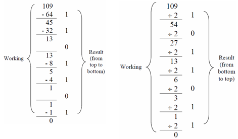
Converting to Base-10
Converting to decimal is much, much easier. All you have to do is write up the powers from the original base, right to left, starting from one, and multiply them by the corresponding digits. Then you just sum everything, and there's your result. For example,
Convert 1010 from binary to decimal.
23 = 8 | 22 = 4 | 21 = 2 | 20 = 1 |
1 | 0 | 1 | 0 |
So then we have (8 * 1) + (4 * 0) + (2 * 1) + (1 * 0) = 10.
Microprocessor Chips
The 4004 chip has 16 memory addresses, each of which can hold a 4-bit value, giving it the ability to store a total of 64 bits of data.
The 8004 chip has the same rules as the 4004 chip although it can hold 8-bit values, giving it 256 (0-255) possible values within each memory address.
Course Etiquette
- Don't ask stupid questions, or questions you don't really care about the answer to. Stupid questions meaning asking a question with the only purpose being to get a reaction (not a real answer) from someone (No trolling!). Otherwise, there is no such thing as a stupid question :)
- Make each question a separate topic/page because then they can be answered separately and easily searched by students, otherwise, people won't be able to answer a question because it till be hidden among everything else.
- Try searching for a question before asking it, to see if it has already been answered.
Storing Values in Microprocessors
- Each value is stored as a binary number in a 'byte'
- The 40XX series has 4 bits (digits) to a byte. So the byte can store numbers from 0-15
- The 80XX series has 8 bits to a byte. So the byte can store numbers from 0-255
- The numbers do not always literally mean that number (ie; 1 could either be the number one or an instruction to increment a counter etc.)
Data Types
- The way a value is used depends on its data type
- An int is an integer number (ie; the value contained in the bits corresponds to that literal number)
- The number of bytes in an int can vary depending on the computer - generally it's 4 bytes, however, the actual length depends on the microprocessor question.
- In C language, a unsigned int has a range from 0 to
 and a signed int has a range from
and a signed int has a range from  to
to  . PLUS, if you can also test on a C program, there is the program. There are also other default variables in C for long int or float and if you are interested, you can Google it and replace INT_MAX OR INT_MIN.
. PLUS, if you can also test on a C program, there is the program. There are also other default variables in C for long int or float and if you are interested, you can Google it and replace INT_MAX OR INT_MIN.
- #include <stdio.h>
- #include <stdlib.h>
- #include <limits.h>
-
- int main (int argc, char *argv[]) {
-
- printf ("INT_MAX is %d\n", INT_MAX) ;
- printf ("INT_MIN is %d\n", INT_MIN) ;
-
- return EXIT_SUCCESS ;
- }
- A short is an integer which is generally smaller than an int - generally 2 bytes (values of 0 to )
- A long is an integer which is generally larger than an int - actually often the same size as an int
- A long long is an integer which is generally larger than a long - generally 8 bytes (values of 0 to )
- The only guarantee with these is that short ≤ int ≤ long ≤ long long
- Generally only use int unless one of the others is specifically needed
- Microprocessors can generally only work with an int at a time so using another size results in either multiple operations needed or useless data being moved
- A float is any real number
- float is short for floating-point the reason being that a number is stored as significant figures (e.g. 1234) and a value to position the point. The point can be moved as needed (e.g. 1.234 or 12.34) i.e. the point can 'float' around.
- A float is stored in 32 bits (Google the "IEEE 754 Standard" for optional further reading)
- like 8 bits are used to store the position of the decimal point, which is the exponent.
- 1 bit to store the sign
- Stored in the binary equivalent of scientific notation ()
- The leftover bits are used to store the number (23 bit Mantissa).
- A double uses double the number of bytes as a float so is generally used instead as precision is important.
- Variable length data types are possible but not important at this point.
- Numbers can be signed or unsigned
- Signed numbers use one bit for whether the number is negative or positive
- Encoded using 2s complement (to get -x, take the binary representation of x, change all 0s to 1s and vice versa and then add 1)
- Signed is (+/-) and Unsigned is (+)
- Unsigned numbers use all of the bits for the number itself so can store larger values than signed, but cannot store negative numbers
- The default is signed for most numbers but you can add signed or unsigned before the normal type to force it to be signed or unsigned. Note that this only applies to integer types, and not floats and doubles.
- A char is an ASCII character (letter, number, punctuation etc.) It's also defined to be exactly one byte, which has a range of 0 to 255 values on almost every computer you'll use (in the foreseeable future).
- No boolean (true/false) type in C, int is used instead (0 corresponding to false, any other number corresponding to true)
Sections [Lecture11: Importance]
- Psychological barriers to your goals
- Being flustered/frustrated
- Stress
- Procrastination
- Dealing with procrastination
- Engineers as the problem solvers
Psychological barriers to your goals
The key trick is to do the most important things, because even if everything falls apart, at least you'll have done the the important stuff.
1. Being flustered/frustrated
- If something makes you flustered/frustrated, you cannot channel your creative/intellectual energy as easily.
- It's often important to deal with frustration when solving a difficult problem, or you risk being stuck in one mode of thought, trying in vain to solve something from one perspective when another is needed. Worst case, you get so frustrated that you simply give up on the problem.
Dealing with frustration
- You need to stay calm, to avoid going on tilt and compounding mistakes one after the other.
- This can help you get back on your feet and overcome the situation much easier, and from the experience, you will be less likely to be as flustered the next time a similar situation.
- In the chess example, you could allocate one whole minute to just analysing the board, no decision-making, just re-evaluating the situation calmly. For another example, if you suddenly realize you won't have enough time to finish your lecture, you should calm down, consider the most important things to get through, and go through them without trying to rush everything in.
- The best way to avoid this is to just take a break and do something that makes you happy, then come back later when the frustration has worn off. It's important to remember that things will get easier - once you do something it becomes so much more natural, and once you solve a problem the solution seems blindingly obvious.
- Taking a break will allow you to return to your work with a clearer head - making it easier to tackle the problem without the clutter in your brain that may have led to your prior frustrations
- The second time frustration hits (if it happens), will not be as bad as the first, and it gets much smaller and smaller as time goes on, so it is best to deal with the peak of frustration as early as possible. Hence by over coming your frustration it makes you better at dealing with your problems.
- Change your level of abstraction
- Take a step back from what you are so narrowly focussed on achieving and understand why you are doing what you are doing.
- A clean slate can help to minimise previous errors
2. Stress
- Stress can lead to anxiety, which can lead to terrible decision-making, but at the same time, stress is also a motivator, which can be used to your benefit. Having some sort of stress can make you more aware of yourself and what you are doing, and will allow you to better evaluate your methods to approaching a certain task, so you can improve upon them and reduce your level of stress. Under stress, the task becomes so much more important, and it's easier to justify spending more time on it than otherwise. So a little bit of stress is a good thing, but too much stress can make us unable to think clearly, and impact mental and physical health. It's very important to make sure we have strategies to manage stress levels.
- Experiences programmers know that even if something is hard, eventually they will have solved it. However new programmers might get overwhelemed and think they might never be able to solve it.
Dealing with stress
- It helps to put the problem in the context of the larger picture, to reduce the anxiety. "Bend with the wind", and having breaks (talking with a friend, take a walk etc.) help you to realise that there's no point worrying about something if it won't help you. Once you realise there is nothing to worry about, you are able to get back into he task with full focus, optimizing the efficiency and effort put in to the task so it can be done quicker and better than you may have previously thought.
- It is very important not to give up, just do the best you can.
- "Don't give up, persevere, do the best you can"
- You'll find once you've done It you'll look back and think about how small of a task it was
3. Procrastination
- Putting off an assignment/task for as long as possible (relegating it to "later", "tomorrow", etc.)
- Often procrastination leads us to do the entire task the night before. Which means you get tired, frustrated and stressed leading to inefficient work and spending more time then you should have on meaningless problems.
Dealing with procrastination
- When you get the assignment/task, make a plan stating what part of the activity you will complete each day. This will save time later, when you're deciding where to start.
- The solution is to just work on it, even a bit every day, start the assignment from day 1, rather than leaving it all right to the end.
- Keeping a blog also helps avoid procrastination, because it makes you write about the problems with your project, so you end up knowing them better.
- A little task done a day can help you finish the task much quicker than you planned, allowing for improvement through revision, and keeping you much less stressed about it as the deadlines approach, such as 3 hours of programming per week.
- There are also tools that exist to help you control your online habits, and it's often good to remember the end-point to motivate you to do the small steps in that direction.
Engineers as the problem solvers
- Engineers solve real-world problems. For example, the Tsunami's damage in Japan was negated by a lot due to the design and structure of the buildings. By becoming a problem solver you're bound to help society in some manner.
- This is an interesting perspective to return to when confused as to why you are doing what you are doing.
Sections of Lecture12: Functions (Part 1)
Abstract: this lecture talks about (i) the aspects of C code (sections 1-x) and (ii) function usage (sections x-y).
- Comments
- Single and inline comments
- Commenting out code
- EXIT_SUCCESS
- What is EXIT_SUCCESS?
- What is the function of EXIT_SUCCESS?
- Memory types
1. Comments
Single and inline comments
- In C, there are two types of comments - single line and inline.
- Single line comments start at the text "//" (outside strings "..."). Anything after the // is a comment, i.e. ignored by the compiler. Single line comments end at the end of a line.
- Inline comments start at the "/*", and end at the "*/". Anything between the two asterisks is considered a comment by the compiler. Unlike single line comments, inline comments can span multiple lines, and can be used inside the code (although this is style-wise taboo).
- /*
- Authors: COMP 1917
- Date: 14/03/2016
- Purpose: Inline and single line comment demonstration
-
- Inline comments are used for long pieces of documentation,
- such as the header comment.
- */
-
- #include <stdlib.h>
-
- int main (int argc /* Evil inline comment*/, char *argv[]) {
- /*
- Inline comments are also sometimes used for longer
- in-function comments. They are useful for commenting
- out large chunks of code when debugging.
- Next is a single line comment.
- */
- // Single line comments can take up an entire line,
- return EXIT_SUCCESS; // or be put at the end of a statement.
- }
Commenting out code
- Commenting out code can be useful for locating errors.
- If you comment out a chunk of code, and the error no longer exists, then you know that the error is located within the chunk that you commented out, narrowing down your search.
- You can repeat this process while halving the interval which you comment out to deduce the incorrect lines.
- This is useful because you are not removing large sections of code which you have to retype if you are actually correct.
- This is similar to commenting out functions, and testing individual parts of a program, but substituting the values that are correct.
2. EXIT_SUCCESS
What is EXIT_SUCCESS?
- We use it as the return value of the main function to the computer.
- EXIT_SUCCESS is defined in the stdlib.h header file.
- Keeping in mind the conventions for the naming of constants, we expect EXIT_SUCCESS to be a constant (and it is!).
What is the function of EXIT_SUCCESS?
- It tells the computer that our program has completed successfully, without any failures.
- EXIT_SUCCESS is standardised as a value of 0, but we use EXIT_SUCCESS because it is an abstraction that is more meaningful than simply 0 (style tip: avoid magic numbers!!!). Using EXIT_SUCCESS is useful because should someone compile your program for some non-standards-compliant machine that has an EXIT_SUCCESS of 1, the program will still compile without errors.
- EXIT_SUCCESS might not be 0 on every machine, so the words convey the meaning, where the number wouldn't.
- Whenever we have a number, we don't know what that number is without context, It has no meaning. We can use #DEFINE to use words that have meaning to replace the numbers that have none.
- We don't want magic numbers
- There is also EXIT_FAILURE to indicate the program is not implemented successfully (learnt later on).
3. Memory types
functions
Functions help us separate our code to create a cleaner approach which will give us a more modular program.
void
A void type is a type that is essentially nothing.
A void function means that that function will not return anything.
A function with void in the brackets tells C not to take in anything, or no inputs.
For example, all C function signatures are of the form 'outType funcName (inParams)', so if your function has no output, you just specify that its output type is void. Similarly, if your function doesn't take any input, inParams would just be void.
C has defaults for these, but they aren't very sensible. It assumes outType is int if it's missing, and if inParams is empty, it doesn't check whether function declarations and definitions line up (although apparently this behaviour is deprecated now).
- void taskOne (void); // A declaration of taskOne, which has no inputs or outputs
These functions are constant functions and should always behave the same way. They usually have side effects
Note: You should ensure that your void type function doesn't have unpredictable behaviour by passing "void" into the argument whenever your functions have no inputs
int
Memory size:
"int" is defined to be 4 bytes, which is 32 bits (so 8 bits per byte) for each byte. Each byte can store 2^8 = 256 different numbers so an "int" variable can store 256^4 = 4294967296 different numbers, which is from -2147483648 to 2147483647. Int variables outside this range will cause an overflow problem.
whenever the compiler talks about varible x, it just means whatever is stored in address 1000.
Most computers store int in the 4 bytes using base 256, for example, 256 goes into 1234 4 times, which gives us 1024, with a remainder of 210
So it will store |0|0|4|210|
Each cell is 256^n, where n starts at 0 from the right.
Declaration before Use before Definition
Everything in C should be declared before it is used. While this is obvious in, e.g., variables, it's less obvious with functions. Luckily, function definition can be done after use, as long as a declaration is done beforehand.
It's important to note how the compiler reads the program from top to bottom, and then compiles it bottom up, as components slowly building up to a program, but we as humans like to start with the big picture, then go down to the details as necessary.
Even though defining another function before the 'main' function works, the 'main' is the most important part of a program - gives a direct understanding of the program, and as such, should be at the top of the program.
Always remember to declare functions (avoid implicit declaration)
When prototyping a function, the compiler only cares about the structure of the function, such as what type of values it is taking in and what type it returns. It doesn't care for the name of the variables that it takes in.
- #include <stdio.h>
- #include <stdlib.h>
-
- void taskOne (void); //declare function here before main function
-
- int main (int argc, char * argv[]){
- //code goes here
- taskOne(); //call function here
- return EXIT_SUCCESS;
- }
-
- void taskOne (void) { // define what the function does here below main function
- //code goes here
- }
-
Printing Decimals
- #include <stdio.h>
- #include <stdlib.h>
-
- void printFloat (double metres);
- //declaration of function indicates that the function exists
- void printHex (void);
-
- int main (int argc, char * argv[]){
- double height;
- height = 2.15;
- printFloat(height);
-
- return EXIT_SUCCESS;
- }
-
- void printFloat (double metres) {
- /*computer only expects an argument (here, a double) as an input;
- name of argument doesn't matter*/
- double radius = 1.00;
- printf("The brie has a radius of %f meters\n", radius);
- }
-
- void printHex(void) {
- long height = 12;
- printf("The brie is %x cm high\n", height);
- //to print out in hexadecimal format, use x
- }
-
- A variable within a function may have the same name as a variable outside of the function but the two variables are different (e.g. the height in lines 4 and 8).
- you may need to use "ld" if you are printing a long int.
- Look up 'format strings' or 'printf' to find out more info about format specifiers
- % followed by...
c | Character |
d or i | Signed decimal integer |
e | Scientific notation (mantissa/exponent) using e character |
E | Scientific notation (mantissa/exponent) using E character |
f | Decimal floating point |
g | Uses the shorter of %e or %f |
G | Uses the shorter of %E or %f |
o | Signed octal |
s | String of characters |
u | Unsigned decimal integer |
x | Unsigned hexadecimal integer |
X | Unsigned hexadecimal integer (capital letters) |
p | Pointer address |
n | Nothing printed |
% | Character |
Variable Scope
The scope of a variable is the area where a variable exists. For a variable scope to exist, the variable must be declared in this scope. The area can be a declared function or the main function. If a variable was declared in a declared function, ie "function1()", then that variable will not exist in another function unless declared there. Thus if a variable was declared in a function, the values stored in the variable can only be manipulated or called only within that function and no where else. When that function ends, all the varibles in that scope are thrown way.
For example, the variable "int number" declared inside a main function would not be the same as the variable "int number" declared inside another function called "int addition(int number)".
In C, the two main restrictions that pertain towards variables are:
- Variables are bounded within a scope (curly braces create new scopes)
- Variables must be declared before they are used.
Local Variables: A variable declared inside functions or within a block of code e.g. inside a while loop or an if statement. Local Variables can only be used by statements that are also within that function or block.
Global Variables: A variable declared outside of every function. Global variables can be accessed by ANY function or block of codes within the program (hence the name "Global").
Passing values through multiple functions will not be in the same scope.
'scanf' can read in a value within main and pass it into a lower function OR it can read in the function and use the value directly so consider the scope of the variable in relation to how it can be used. (does it only have meaning inside the function? or do you need to use it several times?)
Side Effects
A function is said to have side effects if it takes an input other than the inputs given to it as parameters (such as keyboard input in scanf), or produces output other than the output it gives to the caller (such as outputting text to a display with printf).
Other notes
- in hex, one byte = 2 hexadecimal digits
- Conflicting types means you passed in a type of value other than the one it expected. (ie, passing in a float instead of an int)
Example code that was written in this lecture:
- // Lecture 11: Functions (part1)
- // Example code written by Richard Buckland
- #include <stdio.h>
- #include <stdlib.h>
- void exampleOne (void);
- //Computer doesn't care if name passed in argument is the same name as the one defined in the actual function below
- void exampleDouble (double height);
- void exampleHex (void);
- int main (int argc, char * argv[]) {
- printf ("Lecture 3 examples!\n");
- double height;
- height = 2.31
- exampleDouble (height);
- printf("Example done\n");
- return EXIT_SUCCESS;
- }
- void exampleOne (void) {
- printf ("Example 1\n");
- printf ("EXIT_SUCCESS is %d\n", EXIT_SUCCESS);
- return;
- }
- void exampleDouble (double metres) {
- printf("your height is %f metres\n", metres);
- }
- void exampleHex (void) {
- long height = 1234;
- printf("your height is %lx\n, height");
- }
Using a function inside another function
In Lecture 12, we looked at how to write a function: how to physically implement it into your code. You can call a function inside another function to perform some action that may need to be done before the program can continue.
e.g. Doomsday problem: you need to do a number of small calculations to get the result.
- int daysToNextThursday (int year, int month, int day) {
- int doomsday = yearToDoomsday (year);
- int leapyear = isLeapYear (year);
- int weekDay = daysOfWeek (doomsday, leapYear, month, day);
-
- int daysToThursday = //
- // some calculation based on the results of the previous functions
-
- return daysToThursday;
- }
The function 'daysToNextThursday' would be called from the 'main' function. After this function has been executed, it will return the result back to 'main'. This keeps the calculations done by the program in small, discrete blocks to enable clarity to help our understanding on what each part of the code is doing.
We also see in this example 3 more functions:
- yearToDoomsday(year)
- isLeapYear(year)
- daysOfWeek (doomsday, leapYear, month, day)
being called from 'daysToNextThursday' function, further showing the use of a function inside another function.
Top-Down Design
Top-Down Design is essentially defining the outer structure/system of the program first, and breaking it down to smaller problems which gives insight into the sub-parts, enabling solutions for these smaller problems. This process it iterated until eventually you're able to solve each of them with little difficulty.
We can do this by writing out the big picture, such as making all the initial functions that need to be done, then making those functions and anything else that follows.
Plan ahead and avoid rushing into your program. Remember, the more stressed you are the higher the chance of making mistakes. Don't lose your peak or feel flustered because of the mistakes you make. Complete one sub-function a day!
Although "ten minutes in the forge beats two hours at the grinder",
Advantages of breaking down a big problem into smaller parts:
- It becomes easier to tell if you are right or not.
- It improves the legibility of the code (for humans).
- Breaking a big problem into individual functions allows for better reliability compared to a big junk of complex code.
- Ease for error checking and maintenance - as you can test each smaller part separately, it is easier to identify the problem in your code if in the case of errors
- If you have written a long function go back and break it into smaller functions as it will be more structured, shorter and easier.
- It’s important to find the easiest method to solve something. Complexity can cause error in code.
- General rule of computer science is your function should never be long.
- If your function doesn’t fit on the screen it should be spilt.
- Each function should do one thing and this should be be specialised.
- When you call the function it sets some memory aside then it copies the names into that memory and then at the end of the function it throws it away.
- get big picture of program then relax --break it into small problems -- if you keep breaking a problem down and down eventually the problem is so small you can solve it right away.
Keep functions short
Each function should only perform one action, and should generally fit on the screen without needing to scroll. This doesn't necessarily affect the correctness but it is important for clarity. If your function only does one thing, you can give it a name that clearly states what it does, and other people will be able to understand it's purpose.
Notes on variables in functions
- Values will get passed down in correspondence to their order inside the brackets, regardless of their names.
- These variables may have different names, but it is advisable to give them meaningful names.
- The function only uses a temporary copy of the variable you have passed in. This value lives and dies with the function. After the function has finished its work, the stored variables are discarded.
- The variable names used when declaring a function are simply placeholders, and the program will still function the same if they differ between where the function is declared and where it is defined. What does matter is the number of variables and their types.
- The types of these variables will stay constant if they're passed in (e.g. integers will stay integers).
bits can be interpreted in various ways, from ints, to characters, to hexadecimals or even colours. They have no initial meaning.
A bitmap graphic is composed of many tiny parts, called pixels, each of these pixels can colours represented by the blue, green and red component intensities. It is possible to edit each individual pixel to change its colour. For a graphical interpretation of a pixel, look at the image below.
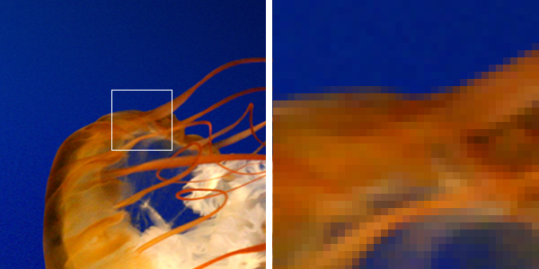
As you can see, when we zoom up very high on a high resolution image, the image is composed of single colour blocks - these are pixels. Each pixel can only hold one unique colour. It is the basis for all bitmap images.
Note: Resolution refers to the number of pixels in an image. The higher resolution the image, the deeper you can zoom without being able to see each and every pixel.
Bit Map File
- A collection of 0's and 1's, which are grouped into eight bits (each group is called a byte).
- 0's and 1's (binary) don't actually have any meaning. Meaning is only created when they are interpreted in some way.
- A bitmap is simply collection of 0's and 1's, which are grouped into eight bits (each group is called a byte).
- In a hex editor (hex standing for hexadecimal), it displays the bytes as their numeric value (in hexadecimal notation) rather than characters. I.e. It is different to opening it in a text editor
- The meaning of the bits of a program only has meaning when they are interpreted in some way - a bitmap file (a file of bits) is a graphic.
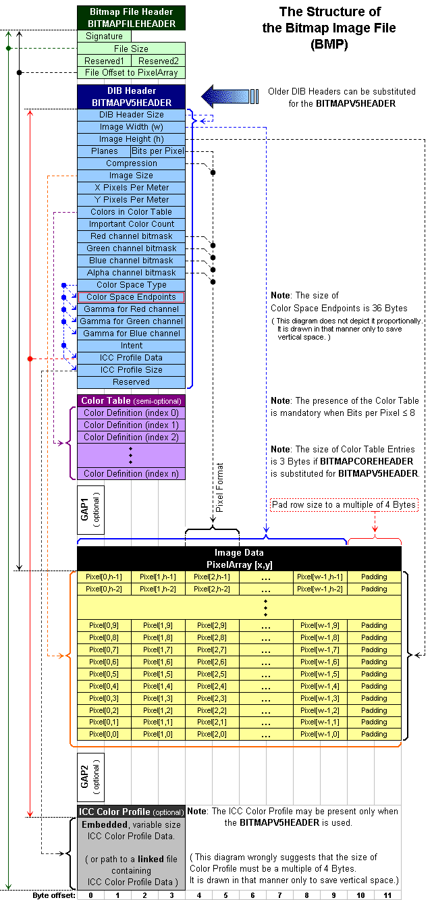
Bit Map File Structure (Order) - Refer to Wikipedia Entry: "BMP file format"
- The Bit Map File Header - occupies 14 bytes (without this the image can't be opened - it's corrupt)
- Altering bytes 0 to 13 may corrupt the file or cause unexpected errors.
- Bytes 0 and 1 correspond to the file type, in Richard's example BM
- Bytes 2 to 5 refer to the size of the file
- Bytes 6 to 9 are reserved for the application that generates the Bitmap file
- Bytes 10 to 13 store the location of the start of data (where the Pixel Array begins).
- The data here contains information about the image such as the size of the header, the bitmap width/height in pixel, the number of colour planes, number of bits per pixel (colour depth of the image) and it's pixel format - size varies but Richard's example occupies 40 bytes
- The first 4 bytes of the DIB Header are assigned to the size of the header, since Richard's example was 40 bytes it would have read 28 which in hex is 40
- The next 8 bytes correspond to the bitmap's dimensions, The first 4 for width, the next 4 for height
- The next 2 correspond to the colour plane
- The next 2 correspond to the bit depth, in our case this is value 18, which is 24 bits, which is 3x8 bit colour
- Next 4 are for compression
- Next 4 correspond to the size of the pixel array data including padding
- Then we have the next 8(4,4) as the Horizontal and vertical resolution
- the 4 after that are for the number of colors in the palette
- then the next 4 are the number of important colours
- The image's pixels are stored here - length depends on resolution of image
- The total amount of bytes necessary to store an array of pixels is given by ArraySize = RowSize . |Image Height|, where image height is expressed in the number of pixels.
- The image's pixels are stored here - length depends on resolution of image
- The pixels are stored in values of red green and blue, using primary colours allows for all colours to be made
- Alternative tutorial for explanation of structure and editing with hex editor [courtesy of Michael Lam].
Green: Header
Blue: DIB Header
Yellow: Data/Pixel Array
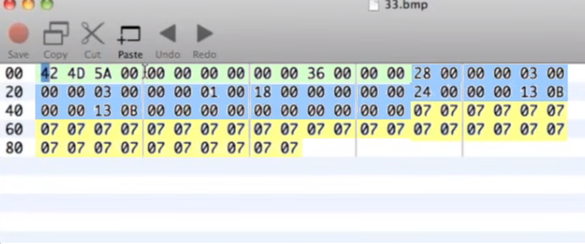
Other Information
- Counter-intuitively, the first pixel begins from the bottom left (possibly to allow for easier co-ordinate geometry like a Cartesian plane) [Left to Right then Bottom to Top]
- Additionally, the colours are also stored differently.
- (As seen in a Hex Editor:) A row of pixels must start on a 4 byte boundary (it is convenient for memory purposes to always deal with 4 bytes at a time)
- There are 3 pixels in each row and each pixel takes 3 bytes, which means that 9 bytes are used to store a row of pixels. Since there is a 4 byte boundary per pixel, the row is padded out to four bytes; the last 3 bytes of each row are all padding in which you can put anything you want.
- You can also add things to the end of the bitmap file but it may be truncated, unlike the data that you add to the padding.
Storing Colours on a BMP file:
Colors are represented and stored on the file using 3 bytes. They follow the order: Blue, Green, Red (the primary colours). Each pixel uses 24 bits to store its colour with 8 bits being used to store each of the colours (Blue, Green and Red).
- Putting FF into the first box will get you a Blue.
- Similarly, putting a FF in the second box will get you Green and FF in the third will give Red (at one position).
- If you wanted a particular shade of blue at a certain square you would put in FF 01 02 (or any other number from 00 to FF in hexadecimal).
- The lower the number, the darker the shade will be (i.e FF 01 02 is a much darker blue than FF 98 99).
- Inputting 00 00 00 for each byte will give you black, similarly FF FF FF for each byte will give you white.
There many online tools that will allow you to pick the colour you want which will convert them to the corresponding blue, red and green values.
Note: It is important to know that colours in bitmap files follow the colour order of blue -> green -> red because some of these tools may follow red -> green -> blue.
Size of
The sizeof(); function gives you the memory size of a variable. An int uses 4 bytes (32 bits), a character uses 1 byte (8 bits). Long, long long and double all use 8 bytes. Short take up 2 bytes and float uses 4 bytes.
- int x;
- printf("size of x = %d\n",sizeof(x));
Pointers
Pointers "point" to another variable. They store the address in memory of another variable. You can modify the value stored at that address. Eg. in the 4004 microprocessor tasks: each of the 1 cells has an "address" (0-15) and a value (the number stored in that memory). A pointer gives the address of the variable.
The address is stored as a hexadecimal number. You can tell that a value is a hexadecimal number because it starts with 0x.
Using * before a variable points it to the address of that variable (it means "address of"). For easier understanding, int * address can be interpreted as: *address is a pointer to an int; where "address" is the name of the pointer.
int *variable; will create a pointer called variable.
it can also be viewed as (int *) address;
"address is a pointer to an int.
int * means a pointer to an int."
Here's an example mentioned by Richard in lec 24 which I found really helpful:
eg in the address 100 there is a letter “Y” for a variable called "message"
Thus:
message is Y (content of the variable)
&message is 100 (address of message)
*100 is Y (content of message)
&variable is the address of the variable. By putting an & in-front of a variable, it will return the address of that variable
*variable will dereference a pointer or address and return the value of the address that the pointer is pointing to.
%p is the format used to print out a pointer or address. It only controls the format, and so by using %d you could print out the decimal value of an address.
- int x = 1;
-
- int *address;
- // address is a pointer to an int
- address = &x;
- // the memory address of the integer x
- // is now stored in the pointer variable "address"
-
- printf ("The address of x is %p\n",&x);
- //%p prints the value in hexadecimal
- printf ("The value stored at %p is %d", address, *address);
- // address = &x, so will print the same as line above
- // *address will give the values stored at address
Additionally, while the memory allocation of ints are random, it should be noted that the respective addresses of consecutive ints are also consecutively stored in memory, separated by 4 bytes each (further evidence that 4 bytes are set aside for an int).
Pointers in functions
Passing the pointer value into the function makes a copy of the pointer value, like with any other variable. But a copy of the memory address means you still have the memory address, and can still alter the value of the variable you're pointing to, in memory. This means that "scanf" has the side-effect (does something other than return its output) of altering whatever is stored at the address it is directed towards.
In this way, if a function is given an address instead of a variable, It can then change the value of that variable outside of its original scope.
Notes :
- int y = scanf ("%d\n", &x) ;
- scanf has a side-effect of altering value you passed in
- scanf will return an int corresponding to how many values it read in, not the values that it read in.
- We do not give the value of x because scanf has side effect that can change the value and copy the altered value of x.
- So we give the address of x because it does not matter whether it is real address of x or copy of address x. Hence the value of x will be consistent because computer knows where the address of x is.
- Your function will then edit the "real" value of x which your main function can directly use. i.e changes won't be discarded after your function resolves
Header Files
You can store useful information that you would rather not have cluttering up your program, such as "#define's and declarations, in a header file, which is a .h file. You can include this header file into a program using
#include "filename.h"
The quotation marks tell the compiler to look for the file in the current directory, unlike <>, which tells it to look in the library. Thus, you must include the header file in the same directory as the .c file.
Lecture 16 Notes:
If we want to do tests, we should get the computer to test.
Humans are bad at doing simple things over and over but computers are very good.
We can do very easy tests if our code is inside a function.
- Make a function to test each other function.
- Good idea to call it testFunctionName for clarity.
- Put test functions at the top, so before anything happens it
- goes through and does the tests.
- Doing this means you don't have to manually check everything every time you make a change.
A good habit is to always write the tests before writing the function. So you know what the function should be capable of doing before you create it.
Running tests before anything else is also a good idea, so you know that there's nothing else wrong with your inputs.
Lecture Example:
A function that takes a lower case letter as input and encodes it as the next lower case letter in the alphabet. In C, this is a simple task as a character is treated like an int. Hence, we can perform arithmetic on it, such as adding 1 to 'a' to give us 'b' (see Lecture 10 for more information).
Important properties:
- Function name: encode()
- Only encodes a lower case letter
- Last letter, 'z', is encoded as the first letter, 'a'
- Asks for a character to be encoded
- Prints out the encoded character if entered character is a lower case letter
Test Cases:
Test characters with known expected encoded values:
- 'a' expected to return as 'b'
- 'z' expected to return as 'a'
- 'A' expected to return as 'A'
- '7' expected to return as '7'
- '?' expected to return as '?'
When testing it is important to use test data that checks all edge cases and exceptions, as well as expected data. For example
- Test 'z' since it is an exception
- Test capital letters and other symbols that should not be changed
- Test some lowercase letters to ensure they are encoded properly
- Test a normal value that you'd expect
- and finally test a random value. This can include very large or zero, or inserting the wrong input (e.g. negative numbers), in an attempt to break your code, as you want to fix as many bugs as possible.
Test Code:
Write a test function 'void testFunction' using the assert function to test known cases:
- void testFunction(void) {
- assert(encode('a') == 'b');
- assert(encode('z') == 'a');
- assert(encode('A') == 'A');
- assert(encode('7') == '7');
- printf("All tests passed!\n");
- }
Use the assert function at the start of the function, after 'int main'
- #include <stdio.h>
- #include <stdlib.h>
- #include <assert.h>
- #include "encode.h"
-
- void testFunction(void);
-
- int main (int argc, char * argv[]) {
-
- testFunction();
-
- // rest of function code goes here
-
- }
Note: Chars go inside single quotes and strings (see lecture 24) go inside double quotes.
Duplication can be Bad
Duplication is powerful, simple and convenient, but merely copy-pasting code runs the risk of introducing errors into your code in the future. For example, if you need to change one aspect of your code, then failing to change all duplicated sections will lead to various logical errors. Maintenance becomes an absolute nightmare for these same reasons.
Constants
One simple way to help avoid unnecessary repetitions is to put the repeated value into a #define constant, so that all the values are the same across the copied code. However, this only applies to certain values, such as constant strings and integers, and can't really handle anything more complex, such as if you wanted to print "Chapter {N}", but the number changed with each repetition.
Constants shouldn't be used everywhere, and mostly kept for numbers. writing code with constants can become messy.
Functions
Functions are more flexible, because they can accept parameters and do processing, so you can abstract the repetition into a function call. This is more than enough for many cases, but in many cases, you'd have far too many calls to the function for even this to be feasible, such as if you wanted to print the squares of all the numbers from one to one hundred.
Writing repeating code in functions is very useful as it keeps everything together, can be easily edited and moved around (such as simply putting the function inside a loop, and reading the code becomes simpler.)
Similar to a recipe, you could write the contents of a function inside a program, but that could be a confusing deluding waste of space. Instead we can just have one function in one place that describes how to do it, rather than repeating in every single piece of code.
Another benefit is that if the function gets improved in the future, then you only need to replace that single function instead of having to change every piece of code.
Loops
Loops let you go through the same block of code over and over until a specified condition has been met. Often, people use loops by incrementing a variable at the end of a loop, and letting it run only while it is above a certain number. Loops are powerful and often essential, but they introduce a bit of mental overhead in tracking how variables change through the many loops. Here we focus only on 'while-loops'.
-
- // In this course, only pre-test while loops are allowed.
- // Process:
- // 1. Test predicate (the part in parens).
- // 2. If predicate is true, execute block then go to step 1.
- // 3. Else, continue the program past the block.
-
- int i = 1;
- while (i <= 10) { // i <= 10 is known as the "predicate".
- printf("Iteration No. %d\n", i);
- i += 1;
- }
-
- printf("Finished iterating!\n");
While loops have a couple of parts
- Declare the loop variable
- Test the conditition for the variable (in the () brackets)
- If the condition is True;
- Run the code (in the {} brackets)
- Then return back to the condition (step 3)
- If the condition is False;
- Exit the loop (don't run anything in the {} brackets, continue the program after them)
Be careful how you structure your while loops, mainly;
- What number your counter variable will start at.
- What your end condition is.
- < > <= == !=
- Each one will have different results
- Think carefully about what you are comparing, you may have to go above or below the number you want your loop to stop at due to the nature of the conditions.
- If you use ==, what happens if your loop never reaches that number?
- Where you increment your variable
- Before any code is run?
- At the end of the loop?
- Where does your dependent code lie relative to this?
Guidelines
- Constants, functions and loops are **not mutually exclusive**! Good code uses each of them as appropriate.
- Mutually exclusive means you can only use them once. Because functions are contained you could repeat them as much as you want.
- Over-engineering is a thing. Avoid it; Simplicity and clarity come first.
- If you use similar code twice, it might be unnecessary repetition.
- If you use the same code three times with very little modification, it's definitely appropriate to abstract this into something less repetitive and more reusable.
- Ensure the condition of the 'while' loop is eventually satisfied, by remembering to increment or change the value being tested (or else you will end up with an infinite loop).
Some New Syntax (Sugar)
Listed below are some nifty shorthand ways of increasing variable values.
- n += m; // n = n + m, also works with *, /, %, -, etc.
- n++; // n = n + 1
//Example code that was written in this lecture
//Counting Bats example:
- #include <stdio.h>
- #include <stdlib.h>
-
- void singVerse (int batCount);
-
- int main (int argc, char * argv[]) {
-
- int batCount;
- batCount = 0;
- int maxNumberOfBats = 10;
-
- while (batCount < maxNumberOfBats) {
- singVerse (batCount);
- printf ("\n\n\n");
- batCount += 1;
- }
- return EXIT_SUCCESS;
- }
-
- void singVerse (int batCount) {
-
- printf ("%d bats sitting in my belfrey\n", batCount);
- printf ("1 bat flies thru the door\n");
- batCount++;
- printf ("that makes %d bats sitting in my belfrey\n", batCount);
- printf ("but wait, there's more...");
- }
//Chapter example:
- #include <stdio.h>
- #include <stdlib.h>
- #define LINE "*********\n" //in quotations because its a string
- #define CHAPTERS_IN_BOOK 11
- void drawChapter (int chapterNumber);
- int main (int argc, char *argv[]) {
- int chapterNumber;
- chapterNumber = 0;
- while (chapterNumber < CHAPTERS_IN_BOOK) {
- drawChapter (chapterNumber);
- printf ("\n\n\n\n\n\n");
- chapterNumber += 1;
- }
- return EXIT_SUCCESS;
- }
- void drawChapter (int chapterNumber) {
- printf (LINE);
- printf ("Chapter %d\n", chapterNumber);
- printf (LINE);
- }
Other Notes
- Like Richard's book course, Its important to experiment and not rely on the course to make you do things like programming.
- Similar to Richard's scary story, being forced to do something in a certain way will help you learn and value a different skill
- We should be concise and only repeat the important stuff.
Common Loop Errors
- Not incrementing the counter.
- The loop is 'not progressing', or has a progression problem
- This will result in an infinite loop.
- You can stop the program using Ctrl-C
- Not initialising the counter.
- If you don't initialise the counter, the loop won't be able to have a comparable condition.
- Initialising the counter to the wrong value
- You might initialise it to a value where the condition is already true, and the loop won't execute.
- Incorrect predicate (condition)
- < > <= == !=
- All have their own meaning
- When using while loops, forgetting {} or putting ; after the condition, making it behave in odd ways
- If there are no { } brackets after a while loop, then the next line will become the loop, or the code that should be in the brackets.
- You shouldn't do this, because you might want to add something in, and in result break the program, or someone else might want to do the same thing, and not realise it.
- ie.
- while()
- printf("hi");
- counter++;
- This would repeat the first task (printing hi) without incrementing counter value, hence making the loop function oddly.
- while () {
- printf("hi\n");
- }
- counter++;
- While using a loop, you must be progressing towards the condition that ends the loop or else you will be trapped in an infinite loop.
Fencepost Errors
Fencepost errors happen when a loop executes more or less times than it is supposed to. This is usually due to an incorrect comparison in the predicate, such as the improper use of less than, greater than, less than or equal to, and greater than or equal to signs.
This is common in loops as we either loop through intervals or boundaries which is determined by the context.
Avoid fencepost errors by creating your loops with a 'sanity check' - a small, relatable test. For example, suppose you want to work out the days between the 10th and the 21st of a particular month. Since the days between the 10th and the 11th are easily worked out;
- Days including end points, 2 = (11-10) +1 = 2
- Days excluding end points 0 = (11-10) -1 = 0
- Days including 1 end point 1= (11-10) = 1
You can test your loop with these values to see if it returns the correct value, 0, and therefore if it is working correctly.
The reason its called a fencepost error is because when you're making a fence.
For example | | | | |
and you need to calculate how much wire you need, then you might say you need 400 meters of wire, and 4 posts, but the posts mark the edges, so you need +1 post.
As such, when looping over things, sometimes;
- You are looping over intervals or periods, in which case it would be 4
- Other times you are looping over boundaries, which would be 5
These cases look identical and are easy to confuse.
Testing IO
If your functions or your main code is doing too many things, it is much harder to test.
Instead, make functions with no side effects, that only have one job, because they are much, much easier to test, as you can easily enter inputs and just test for the outputs.
Conventions of C
- If your counter starts with a 0, you should use a < or > in the condition of your while loop.
- If your counter starts with a 1, you should use a <= or >= in the condition of your while loop.
- As its quite likely that It will be out by 1.
Entering and testing multiple characters
If we want to use our encode function on multiple characters (in our case, 4), we can do so using a while loop.
- char plainChar;
-
- int counter = 0;
-
- while (counter < 4){
- scanf ("%c", &plainChar);
- if (isLowerCase(plainChar)) {
- printf ("%c", encode (plainChar));
- }
- counter++;
- }
We could change our while condition to become "Enter characters until we hit ' '"
- char plainChar;
-
- scanf ("%c", &plainChar);
- while (plainChar != ' '){
- if (isLowerCase(plainChar)) {
- printf ("%c", encode (plainChar));
- }
- scanf ("%c", &plainChar);
- }
Functions that have one input and one output of the same type can be easily fed into eachother
Wondrous Function (Collatz Conjecture)
- n % 2 == 0 ? n / 2 : 3 * n + 1
(without the ternary operator):
- //If n is currently even
- if (n % 2 == 0){
- n = n / 2;
-
- //If n is currently odd
- } else {
- n = 3 * n + 1;
- }
The question is: If you keep feeding 'n' back into this system, starting with a positive integer, will it always reach one? So much complexity emerges from just a loop, a conditional, and a little math, that it's still an unsolved problem in mathematics.
An example would be a function that takes in a number and divides it by two if it is even, and multiplies it by three and adds one to the product if it is odd.
Testing
Test functions do not have to be complex or be able to fully test the code (although it is preferred) as this is not always possible. For example, testing if printing out the Libya flag using loops works, could be as simple as printing it out the flag using a known working method and eyeballing between the two outputs.
Complexity
Complexity arises very quickly even in 'simple' systems. For example, the 4004 has 2^64 possible programs, and it gets exponentially larger (to the number of bytes available) as you move to more complex systems. If you manage to write a program, it's easy to say that it's possible, but if you can't write it, it's very hard to say that it's impossible.
It is a programmer's job to keep this complexity in mind and be wary of introducing errors, something which can be very easy to do, and always approach things with a suspicious mindset.
Nesting Loops
Loops can be put inside loops, and they behave exactly as you'd expect. A common use case is grids, which are often traversed by column then by row. Try not to nest too many loops, avoid program 'drifting to the right' or becoming 'over-nested'. It is significant to calculate the counter correctly. if counter begins 0, the fifth counter should be 4.
- #define FLAG_HEIGHT 5
- #define FLAG_WIDTH 15
-
- int row = 0;
- int col = 0;
-
- while (row < FLAG_HEIGHT) {
-
- col = 0;
- while (col < FLAG_WIDTH) {
- printf("*");
- col++;
- }
- printf("\n");
- row++;
- }
Using this, we can implement functions that will test what the current position of the flag is, and print the corresponding value.
For example with the Irish flag, we can replace our printf("*"); line with our function new function showPixel(col);
- #define IRISH_WIDTH (FLAG_WIDTH/3)
-
- void showPixel(int col){
- char pixel;
- if (col < IRISH_WIDTH){
- pixel = 'g';
- } else if (col < (2*IRISH_WIDTH)) {
- pixel = 'w';
- } else {
- pixel = 'o';
- }
- printf("%c", pixel);
- }
Delegation
Delegation is the assignment of roles to other things, such as in a C function, which can delegate tasks to other functions, so the caller doesn't have to worry about what exactly goes on inside the caller, abstracting the task from the current one. This makes alterations to code much simpler, because you only have to modify the code which is responsible for the particular process to be modified.
We can just simply delegate a task using a function instead of running that task ourselves which would be mushed all together, and become confusing.
Why We Like Functions
- Abstraction
- Code Reuse
- Modularity
Abstraction
When you notice you have to do something, you pretend its done and write a stub (fake) function, then later on the details for that funtion can be filled in, but you can just continue going on with what you were going. In such case, our main function will only have to deal with what it deals with, and delegate its other tasks to another function, reducing confusion. (OAOO)
Assorted Principles
- OAOO - Once and once only. (or OOO once and only once)
- Each function should only be responsible for one thing.
- DRY - Don't repeat yourself.
Code Reuse
If your functions have exactly one role, then should you ever need a function to fulfill that role, e.g. in another project or in another part of your code, YOU CAN USE THE SAME FUNCTION!!! :D (That saves a lot of time and effort.) This also helps you abide by the DRY principle - since the functionality is written within the same function, if you ever need to change it you only need to change it in a single place.
Modularity
The self-contained (discrete) nature of a function makes it perfect for collaboration, because it means functions can be developed by individual developers without the need for continuous and excessive communication, and can easily be used by new developers without needing to understand the entire program's inner workings.
A self contained function is one that:
- Can do a whole thing
- Can just work by itself
- Doesn't need to interact with anything else
- If it does, should be as minimal as possible
- Self contained functions can be easily passed off to someone else
Functions that are not self contained become frustrating to work with, and are hard to delegate if they require constant communication. In the end there was no help at all and it was easier to do it yourself.
The interactions, amount of work it takes to set up the job, get the person going and then collect the results is more work than the actual amount of work that they end up doing.
Stack Frames
When a computer reaches a function, it freezes the current frame, then runs the code for the new function, and once its done, it remembers where it had to jump back to, and what the variables were. All this is written down to the function's frame.
The frame created by a function call holds the point at which the calling function was up to before it called the function. Each function call creates a stack frame, which holds the stack (local) variables of the function, parameters given to the function, and the return address for a higher-level process. It's pushed onto something called the call stack, which is called a stack because we only add, remove and inspect the top-most frame. Modifying frames, such as the return address is a common exploit for a user to modify restricted processes.
HTTP
A web address being entered into a browser can be considered a function. By entering in this address (the input, in our case, http://www.google.com), a request is sent to a web server (google), which then processes this request and sends a response back (the output, a webpage).
The language used for this is called 'HTTP', which is called "Hypertext Transfer Protocol", which is the primary language by which computers communicate on the internet. The request is called an 'HTTP request' and a the response is called an 'HTTP response'.
After we type in the address, our browser will make a HTTP GET request (seen below) Once google receives that HTTP request, it sends back the webpage which is in HTML. Requests using GET can only retrieve data.
A server is just another computer, which has an IP address, usually dedicated to running the website. Servers on the internet have an address that is a 4 (or 6) byte number.
IP address and Ports
Each device connected to the internet has a unique identifying number, called its IP address, which allows other devices on the internet to communicate with it.
A common IPv4 address consists of four numbers (0-255) separated by a full stop (.). Each of the four numbers is one byte in size. These IP addresses can run from 0.0.0.0 to 255.255.255.255 (with many addresses in between reserved for specific purposes) and are a total of 4 bytes in size. IPv4 uses 32-bit (four-byte) addresses, which limits the numbers of addresses to 232 (4294967296). IPv6 addresses have a size of 128 bits. Therefore, IPv6 has a larger address space compared to IPv4.
But because a string of four arbitrary numbers is difficult to remember, we can give each IP address a URL to identify the web server by name.
For example, using "www.google.com.au" is the same as using the IP address (216.58.199.67) (as of Mar 2016), as both will be directed to the google homepage. The same goes for all other websites and their respective IP addresses.
In addition to an IP address, we need to know what port to use in order to communicate with a device on the internet. Here's an analogy: web servers are kind of like hotels. If you want to send someone a message, you need to know the hotel's name or address (the IP address), and what room (aka port) they are staying in. For example, web servers expect to receive HTTP messages at port 80.
An HTTP request to Google usually looks like this.
- GET / HTTP/1.1
- Host: www.google.com
Plus other headers
And it returns this
- HTTP/1.1 200 OK //(this is a status code, like 404)
- Date: Fri, 01 Jan 2016 00:00:00 GMT
- Expires: -1
- Cache-Control: private, max-age=0
- Content-Type: text/html; charset=ISO-8859-1
- Server: gws
- X-XSS-Protection: 1; mode=block
- X-Frame-Options: SAMEORIGIN
- Set-Cookie: <REDACTED>
- Accept-Ranges: none
- Vary: Accept-Encoding
- ...
What this means (Not necessary but it helps you understand HTTP better)
"HTTP/1.1" is telling you that it is using the HTTP 1.1 specifications
"200" tells you that the website exists. Another code, "404", instead tells you that the website doesn't exist.
"OK" lets the user know that the page is accessible and will be displayed
"Cache-Control: private" lets you know that the caches stored are private
The content type tells you what kind of data you will recieve from the server and what character set / encoding / language it will be using
The body text tells the browser what to do with the data and also how to render it.
The body of this message is in HTML, which stands for Hyper Text Markup Language and is used to write websites.
To send your own request, type:
-
- telnet [ip] 80 //(in our case, 216.58.199.67)to connect gws(google web server) through telnet
- GET / HTTP/1.0
- //(have to hit enter once more)
-
You can also telnet to a domain name (such as google.com or www.google.com) instead of an ip.
Examples of valid uses of telnet:
- 216.58.199.67 80
- telnet google.com 80
- telnet www.google.com 80
If you want to access another file or page on the server other than the root (/), for example, the C reference athttp://en.cppreference.com/w/c , you can send a request like so:
- telnet en.cppreference.com 80
- GET /w/c HTTP/1.1
-
Port numbers
- to identify each different ports, just like a room number in our hotel analogy
- The port numbers are divided into three ranges:
- The well-known ports (also known as system ports) are those from 0 through 1023.
- The registered ports are those from 1024 through 49151.
- The dynamic or private ports are those from 49152 through 65535. One common use for this range is for ephemeral ports.
PS: IANA maintains the official list of well-known and registered ranges.
HyperText
- Hypertext is text with links. The Internet is all about links, because that's how we find things. Remember, links in search engine results also count as links.
- HTTP is a protocol designed so that browsers (the clients) and servers had a standard way to ask for and transfer Hypertext to and from each other. That's why it's called the Hypertext Transfer Protocol.
- To specify links (and lots of other cool things, including images, videos and scripts), we made HTML, the Hypertext Markup Language. Basically, it adds all kinds of tags to text, so browsers can format, modify, and process the text, and add in things like links and images.
- HTML is almost always what gets sent through HTTP to browsers so that they can render the webpage for users to enjoy.
Exam Summary
- Not much of note in this lecture
- Write the value directly into the functions internal code <-- This is bad because if we change the function we may change the address where the function reads the variable.
- Write into a register <-- This is bad because we don't have many registers.
- Write into the frame of the function (how we do it when we do functionname(variable)) <-- best way!
When Calling functions:
Several operations happen in the background when we call functions. These can be manually implemented on the microprocessor. These values are usually stored in frames.
- Our main function has to remember where it was up to before calling the other function, so we store this in the function frame.
- We may need to somehow pass a parameter to the other function. We can do this in multiple ways:
- You can change an internal value of a function where you know a value is being checked, but that would mean that you'd need to know how the function works, which is counter intuitive as it would not have abstraction. Additionally, if the implementation of the function changes then it will no longer work.
- You could also push the parameter into a register, which works fine, however, doing so would mean we'd lose a precious register, as we do not have many.
- The most conventional way to pass a value into a function is to write the value into the frame before calling the function, which is a separate area of memory for that function. When the function is called, it will read and write data in this area of memory. Every function in a program should have a dedicated frame.
- Write the value to the frame before calling the function. When called the function will read and write data in this area of memory. Every function in a program should have a dedicated frame.
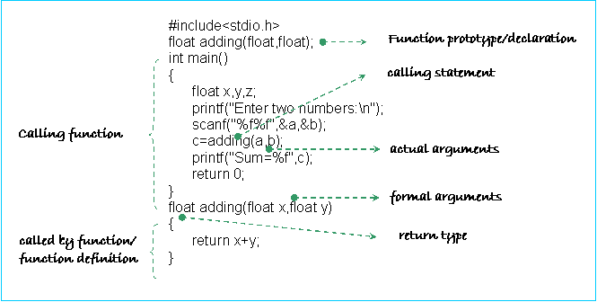
^ Exemplary code for calling functions.
- Violating Abstraction – Breaking an abstraction barrier.
- It can be considered as the opposite of abstraction.
- E.g. writing the variable we want to pass to the function INTO the functions execution sequence rather than storing it in a separate frame in memory is an abstraction violation. It is dangerous, as code may fail later on if we decide to change implementations.
- cdecl:
- A 'Calling convention' used by many C compilers. in cdecl, input parameters are passed onto the stack.
- In our case, our function will pass the value back into register 0, and the only other thing we would have to do, would be to jump back to the main program (by reading in the initial address from the function frame.
- We can call different functions as long as they have different frames.
- Once the function completes, the parent function that calls it (the caller) cleans the stack.
- Conversely: The stdcall calling convention involves the stack being cleaned by the callee (the function being called).
- Note: Again, each function requires their own frame, that is a "stack frame"
- Functions shouldn’t affect the outside program at all i.e. side effects
- Example: Save R1 value in the frame first before we jump to a function, then restore it at the end before jumping back to main function (if we are going to use it)
- Aim of university:
- Unlike school where we essentially rote learn from examples, facts and following instructions, the key focus of university should be to improve your ability to think, apply and adapt your knowledge to new situations and standards. This is especially true for computing, as technology is constantly changing so current conventions can quickly become obsolete in the future.
- Point of a Function:
- A function is supposed to work in a way that it's totally self-contained. The only thing you have to do is pass information to them and you don't edit the function in anyway, in essence it's a 'black-box' as described in the lecture. It will do one thing very well and do it every time so you can always call upon it to provide the means to an end. It's also worth noting that there are many ways to write a function to achieve the same thing.
- Frame convention for this lecture
- First byte stores return address.
- Second byte stores input.
- Third byte stores anything.
- Fourth byte stores anything.
- Fifth byte stores anything.
- Parsing number into a function
- The main bit of code needs to do 2 things, remember where it was up to so it can jump back, and also it needs to give the function the initial value. it can use the frame to remember where it was up to and it can parse on the value in 3 ways
- It can take the number and store it in a cell within the function. but only if the main code knows where the function will expect the input, lets say at address 156.
- This is bad because if the function changes then the single cell which the number can be written in might move and this means that the main functions needs to keep a tab on the function and that sucks, the point of a function is abstraction, you shouldn’t have to worry what the fudge it is doing, just that it does what it is supposed to, even if it gets changed. so if you do this it is called a violation of abstraction.
- You could also push the number into a register, but we only have 2 and by convention we already use one so the function can return a value, plus what if we wanted to give it more then 1 value?
- But you can also store the number in the frame!!! which is what Richard did!!!
Click below for more about the 8005 microprocessor and the half function:
Exam Summary
Lecture revisits the C style guide and focuses on the mitigation of risk which is achieved through the elimination of unknown mistakes in the program.
Testing
- We want to: eliminate mistakes we don't know about (i.e. Code in a way that helps us catch mistakes); to do this we:
- Make our code CLEAR to others (C style guide people)
- Black Box Testing: test using inputs (remember to use boundary cases, that is, values nearby values in which we expect meaningful output.)
- White Box Testing: test by reviewing code.
- Unit Testing: test each function in isolation.
What is the Art of Programming?
The art of programming is not the art of learning all of the C syntax, you can learn that very easily and quickly. But its about having a calm state of mind, the anticipation of things going wrong, and not freaking out when it happens.
The first thing you should do when you look at a task is looking at the risks and what could go wrong. For example, in our toast problem, our biggest danger is that if we had the wrong answer, we wouldn't even know, and that is why when approaching the problem do it in such a way where we have confidence in our solution.
Our program specifications dictate what the program needs to do and how it should run. They are important because they allow different parts of the program to work together in the end. If you deviate away from the program specifications, although your program might be better, it may not help the larger program in the grand scheme of things as it doesn't follow the same rules or patterns as everything else around it. It can then act as a foreign body!
"The spec is king" if the spec says do something, then you should do it.
But this doesn't stop us from going to the person who wrote the spec and ask them to change it, However, If you can't change the specs, follow it.
One important aspect of programming is making it absolutely lucid to not only yourself, but to others who may review yourself. This is so others can clearly understand your code and potentially improve it - not to mention reviewing code you previously wrote. In addition, writing cohesive and obvious code should also help you in refining/modifying your code later on.
Testing
Summary: We test to eliminate the biggest risk of programming: mistakes in the program that you don't know about.
When you write a program, the biggest risk is that there is a mistake that you do not know about. And so, computing has shifted from fancy syntax to making sure your program is correct, as projects get bigger and bigger, if one little component is buggy, then its the weak link in the chain, meaning the reliability of the whole system is only as good as the reliability of the least reliable component.
The idea of how you find that your code is correct is difficult, such as proving mathematically that your program is correct. However this is quite a difficult and tedious thing to do, where your assumptions might not be correct.
- Clear Code in the First place
Summary: Make the code in a clear and simple way, so that anyone can read and understand it.
A way of testing for correctness is to write code that is clear, logical, apparent and self evident, so that anyone can read and understand the code.
If code confusing and complex, then every time someone has to think about what code is doing, not only will they be wasting time, but also might make a mistake in reading the code.
The best programming is one where the program is so natural and obvious that someone understands it straight away, and no one is impressed by it.
The first best way to avoid having errors in your program is to write them really clearly and simply, by finding the simplicity hidden inside the program, so anything that is wrong stands out.
The other way to avoid errors is through testing every possible case of inputs. Although you can't for complete confidence in your program, but you can get confidence that things are wrong when things fails, which slowly builds complete confidence.
- Blackbox Testing
Summary: Test through input and output only.
A very primitive form of testing. The tester only knows that the program works but not how the program works. This is tested through random inputs and finding patterns in the respective outputs. Thus, many times, a program may sometimes work and sometimes not work, due to the inconsistency of this type of test.
- Whitebox Testing
Summary: Testing through reading and reviewing the source code.
Also known as glass-box testing, it is a testing process in which the programmer has access and a deep level of understanding of the program's source code and its smaller components. Whitebox testing presents more complexity in testing and is sometimes unrealistic as some programs have innumerable smaller components that if given a series of unit tests each, would take too long to create.
Whitebox testing is much more thorough and unit testing is an example of whitebox testing.
- Unit Testing
Summary: Testing each component (function) separately.
If we have a giant program that has smaller programs inside, although the entire program may seem to function correctly, we might never come across a situation where those smaller programs (units) might fail upon being in a certain configuration, as the complexity of the program limits us from testing every single possible case in a reasonable amount of time.
The idea of unit testing is to implement detailed testing in individual parts/units of a program. These tests can be built up slowly throughout development. Unit testing involves the testing of each component of the program and checking that they produce the desired output or generally operate correctly. Writing tests for each unit allows for fast results that allow a programmer to detect subtle and hard-to-find errors in code.
If we know that every single part of the program will function correctly, then we have confidence to know that as long as every other function passes the correct data, nothing will fail.
During development set up a test file, so that each time you change something you can easily run every test you have previously developed to ensure that what you have changed does not 'break' something previously 'fixed' or introduce an error elsewhere
Unit tests should be written before writing the unit. Every time a new bug is found, unit tests should be added to the file containing all the unit tests. Essentially, any change made should be paired with additional unit tests. No tests should ever be removed.
8004 Wondrous Number Example
The 8004 Wondrous Number example has a function for:
- halving numbers
- giving next number in the sequence
- IsEven
- printing out a term and a space afterwards
We write the 8004 functionally so that Instead of testing the entire program as a black-box, we can instead just test each function.
In order to unit test the 8004 Wondrous Number program, a standard (or interface) must be set out to specify where all the functions are going to be located in the program. For example, the half function could be located at memory address 50, the next number in the sequence function could be located at memory address 100, and so on. Ensure, as far as possible that the 'standard' is clear and where possible has a predictable easy to follow pattern
As well as the location of the functions, the location of the frame for all the functions must also be specified in order to communicate with the functions.
When we are writing programs, every little thing we put in our way that could be an obstacle will cause us to trip up. We need to be consistent and have a standard to ensure there are no surprises, and everything is runs as expected.
Why we look at Machine code and C
In real life,
A program written in C is interesting and clear and allows for programs to be written in small amounts of code. On the other hand, the same program written on any microprocessor would require huge amounts of code with many 0s and 1s in comparison, and would be extremely complex. Therefore, C is a much more convenient language to write programs in.
In our course,
The 8004 chip is just a fictional chip and it is clear to see that it is less convenient when writing a lot of numbers. However, it can still be used to write programs. It's programs can achieve a certain level of complexity, but the limited number of bytes and sole use of numbers make it incredibly time consuming and troublesome to use, limiting its utility. The 8004 does have less rules though, but this comes at a cost of a longer program in comparison to C, and so there is a trade-off between simplicity and code length.
The main thing to take away is that you can write a program in any language, as the art of writing a program is just understanding the problem, converting it to an algorithm, breaking it down into a series of steps that will solve the problem, and then coding it up in a language.
Your processor understands machine code (or assembly) but It doesn't understand C. To run a program, we first need to compile it using gcc, which then produces machine code, which is very tedious and complex to understand and write.
The C programs you write are being compiled into assembler. They are both different takes on the same thing, but different levels of abstraction, as C is a high level programming language and machine code is low. This is because while we talking C language, we are talking about C syntax also representing microprocessor processing the code with machine codes behind C.
Hence, C is very tightly tied to the processor and how it works, and so to understand how C works, we need to understand what happens at the machine code level.
Flow Control:
Flow control (or control flow) is the order in which individual sections of code are executed.
Control statements enable the programmer to specify the flow control of a program. They make it possible to make decisions, jump from sections of code or perform tasks repeatedly in a certain program.
There are 3 types of flow control:
Sequential
C sequences in a top down manner, (one line after the other. Reads one function, then the next).
Jump statements allow for the altering of the flow of the program by performing jumps to certain locations of the program. We do not cover these in COMP1917.
Selection
Selection is branching, such as through using an if statement (one thing or the other)
Selection statements are used to perform decision-making and branch the program based on the outcome of the decision. Selection structures in C include if/else statements. These are two way branching statements.
Iteration
Iteration is looping, such as a while loop.
Iteration statements are used to execute a certain set of actions for a definite number of times until a particular condition is satisfied. There are three iteration statements of C, but for this course, we only focus on one. This is the while loop.
These are the 3 main fundamentals of programming, and although flow control may seem like the most important thing, once you know the main flow controls, you can learn any language, and in a quick amount of time. Flow control turns out to not really be that important, but instead the abstraction of the data that flows through a program.
Data abstraction is when one input includes all the data required for a function, this helps in flow control as it reduces the amount of inputs in the function and resulting in a program that is both clearer while also being fast flowing through inputs in the function. For example, It would be more effective to pass a lump of "Your birthday" into a function instead of the day, month and year.
Abstraction provides us a trade-off where if your data types are more complex, then your logic becomes less complex.
Strings
Strings in the machine code
Recall the activity we have done----printing "You Are Awesome!" with 8004 microprocessor. Here is the principle of strings written in machine code.
- This is the calling function below executing printing this sentence. In the main function, we call this function.
- Imagine this function starts at address 100( cell 100).
- Number in each cell represents ASCII code of each character (In this case, I just use character to substitute the ASCII code.)
- R1 as pointer points each address of characters.
- Then load the ASCII value of each address into R0 by pointing each address and print this string.
- In the end we need to store a 0 to let string halt and this is way in which C does.
100 Y | 101 O | 102 U |
103A | 104R | .... |
...... | ..... | .... |
..... | ..... | 0 |
Strings in C
A string is an array of characters, ending with a null character, '\0'. (This differentiates strings from normal arrays, which are not terminated by a null character.) Without this, when printing out a string C continues without stopping even at the end of the string, until it finds a random null somewhere.
The variable name of a string is actually a pointer to the cell where the first character of the string is stored. The string comprises all characters from that cell to the cell where the computer encounters a null character ('\0').
In using strings it is important to be able to, in code, distinguish between the variable (which assigns an area of memory to a pointer), the pointer, which is a number that identifies the cell in which the computer can locate the first element of the string (the address of the string) and the content of the string (which comprises all the letters stored in the cells starting at the one to which the pointer points and ending at the first cell containing a null character). The null character tells the computer - this is the end of the string.
We could have our names as addresses, but if we were to move, then we would have to setup re-directions, and if we moved back to where we originated from, then there would be a huge mess.
It is also important to remember that when you are utilising strings in your code to not forget the statement "#include <string.h>" at the top of your code. Otherwise the compiler won't recognise your code.
The lecture gave some examples of the distinction in code using the printf command.
char *message = “Tree” | Sets the content at the beginning of the address “message” to “Tree. Message is a pointer that points to a character. |
printf (“%s”, message) | Prints out the content at the address “message” so it will print “Tree” Note: using the variable name alone means the content of that variable, however in this example we are using a pointer, and %s which means print out a string, and expects you to pass in the address of the first character of the string. Once it reaches a 0 it will stop. Simplified: Print out the contents of message, as a string |
printf(“%p”, &message) | Prints out the address of the variable (pointer) message Simplified: Print out the address of message, as a pointer |
printf(“%p”, message) | Prints out the contents of message, so will print out the location where the first character of the variable “message” is stored Simplified: Print out the contents of message, which is the address of the start of the string “Tree”, as a pointer |
printf (“%c”, *message) | Prints the value of the cell that the variable message points to. So in this case, &message points to the first cell in the string ‘message’ and the content of that first cell is ‘T’, so this will print ‘T’ Simplified: Print out what’s stored at the address of message, as a character |
printf(“%c”, message [n]); printf(“%c”, message [n]); | Note: here n is a number This command prints the n th character (counting from 0, ie 0 referring to the 1st character) in the collection of characters assigned to the variable ‘message’. So printf(“%c”, message [1]); will return 'r' Simplified: Print out the nth character of message, as a character |
printf(“%p”, main) | Prints out the address of the function “main” Note: when referring to Functions rather than Variables, the name of the function used alone refers to its address and not its content Simplified: Print out the contents of main, as a pointer |
Receiving string inputs:
There are two ways to receive an inputted string(in conjunction with a loop) which are:
1. scan("%c", letter)
2. getchar()
Whats the point of pointers?
The value of pointers is that they allow you to index something by position rather than by name, and so using loops, we can quickly iterate over a collection of things, so:
Assuming that char *message = "Tree";
message[1] refers to the second character of message, "r". We can also do message[1] = 'z', turning the string into "Tzee".
Another use for it is if you want to access the original variable (declared in your main function) through your sub function, you can instead copy the address of the variable (instead of just making a copy of the variable) to your sub function. So your sub function will now have access to the address of that variable and hence the actual variable.
e.g.
int main (...){
int x = 5;
subFunction (&x);
.
.
.
int subFunction (int *x){
*x = 1;
return x;
}
Syntactic Sugar:
Syntactic sugar is syntax in a certain programming language that is designed to make things easier to read and define, that does something in the same way that another line of syntax can.
String Library
We can utilise a library which incorporates a handful of useful functions to deal with strings:
#include <string.h>
Address & length of string
- char *message = "tree";
- printf ("length of %s is %d, first letter is %c i.e. %c\n",
- message, strlen(message), *message, message[0]);
In this case:
- "message" is a pointer to the address of the start of the string.
- "strlen(string)" is a built-in function in the 'string.h' file. Given that a variable is a pointer to a string, this function calculates and returns the length of that string.
- "*message" means go to the place that the variable is pointing to and return the value of what exists there. In this case, it will points to the first letter of the string, "tree", and return 't'.
- message[0] = used to pinpoint a location along the string, in this instance, [0] would point to the first character, 't' in our string.
- So this will yield “length of tree is 4, first letter is t i.e. t”.
The strlen function works by finding the address of the first character of the string before looping through the string and adding to a counter until the character is 0 which signals the termination of the string.
Code for your own string length functions
When we pass in a string into a function, we need to remember to pass it in as a string as char * message
This provides two alternative versions of DIY string length functions which do the same thing as the built in function above.
Essentially these tell the computer to look at a particular address (designated by a pointer) if the content of the cell is not 0, increment the counter by 1 and increment the pointer by 1 (either by increasing the value of the pointer (option 1) or increasing the value of [length] option 2)
- int stringLength (char *start) {
-
- int length = 0;
- char *pointer;
- pointer = start;
-
- while (*pointer !=0) {
- //value of what is at the address
- length ++;
- pointer ++;
- //increment the value of the pointer address
- //ie. from 0xff1 to 0xff2
- }
-
- return length;
- }
- int stringLength (char *start) {
-
- int length = 0;
-
- while (start[length] !=0) {
- //here we check the value of our string when indexed.
- length ++;
- }
-
- return length;
- }
An advantage of using pointers is that if you have a string that is a megabyte long, then to copy that string into the function would be very inefficient. Instead when we use pointers we only need to know the location of where the string starts.
Dangers:
Strings could be vulnerable to exploitations if they are not properly managed. You should never mix in user data and program data so there is no ambiguity in the program's interpretation and no basis for attacks.
What if we wanted to store a null character in a string? To do this, we can explicitly store control data which includes the length of the string at the start of the string. This is also a safer option because we can separately store the string and the control data for the string, otherwise if it was mixed in, the user could embed control data within the user data.
In C, we use single quotes (' ') to represent characters. Characters are stored as a 1 byte (or 8 bit) number corresponding to that character's ASCII value. Click here for a list of ASCII characters and values.
We use double quotes (" ") to represent a string. char *str = "hello world" sets aside an area of memory, that is 12 bytes long (remember that 1 char has a size of 1 byte). This is 1 byte for each character (including spaces/whitespace) within the double quotesplus 1 byte for the NUL terminator '\0'. Each character is stored successively in memory (i.e h is just before e is just before l.....). A pointer to the first element is returned to indicate the starting address of the string.
We cannot change a string declared this way, because of how it is stored in memory (i.e by typing string[0] = 'T'; even though individual characters can be accessed through this notation).
C puts the string in a high area of memory that is read-only so you are not allowed to change it, more commonly known as 'immutable'.
If we want to have a mutable string, then we must instead store it in an array of characters.
char *string = "hello" Is not mutable
char string[] = "hello" Is mutable
- Arrays are collections of multiple variables of the same data type, stored next to each other in memory (you can have an array of ints or an array of chars but you can’t have an array of ints AND chars mixed together).
- Strings are arrays of characters with slight differences (see below).
- We can access the individual items ("elements" as they are called) in an array using square brackets like strings e.g. if ages is an array of ints then ages[4] is how you refer to the 5th int in the array.
- The first element of an array is accessed by array[0]. Arrays in C are said to be "zero indexed".
- Arrays have one interesting difference from other sorts of variables in C.
- for all variables you have seen so far, when you write their name in a program it refers to their CONTENTS.
- However when the name of array is written it refers to the ADDRESS of the start of the array
The following code shows how to initialise and use a 42 element array of characters.
- char message[42];
- printf("address of the array is %p \n", message);
- //remember, when we use an array, we refer to it as an address of where it starts.
- //its for that reason, we don't use &message
-
- //we can enter values into our array as
- message[0] = 'T';
- message[1] = 'r';
- //and so on...
- //we also need to add in the end of string, represented by the null
- message[4] = 0;
- // using '0' instead would result in the digit 0,
- // which isn't the correct end point.
- // correct input to assign null is '\0' i.e
- // message[10] = '\0';
You can have an array of characters that isn't a string. What makes something a string is the 0 end value at the end.
If you declare an array, like the one above, all its values will not get defaulted to 0. Because of this, you could print out the rest of the array and look for the data that it might store. This could be a security flaw as someone might be able to read in data that they shouldn't normally be able to.
You can store any type in an array, such as ints, longs, etc.
We can also sum the values of an array
- #define NUM_MONTHS 12
- int days[NUM_MONTHS];
- days[0] = 31;
- days[1] = 29;
- days[2] = 31;
- days[3] = 30;
-
- int pos = 0;
- int sum = 0;
-
- while (pos <NUM_MONTHS){
- sum += days[pos];
- pos++;
-
- }
-
- printf("Sum of days is %d\n", sum);
If you initialised an array and then decided you wanted to make it bigger, C cannot do that, because you might overwrite other data. In other languages arrays are secretly moved to another location that has more memory, however in C you can't do that because we rely on pointers.
How arrays are stored
The size of an array will be 4 times the size of a character array that contains the same number of elements.
When we use bracket notation (days[2]), it will automatically calculate that the array is a whole lot of integers, and that integers are of size 4, so it will need to skip 2*4 = 8 elements to get to the location.
Recall that when you pass the array days into a function, you are passing in a pointer that is pointing to the address of where that array starts. Because of this, a function is given the array itself, and not a copy of the array. We must be careful of this as it is a side-effect.
The reasoning for this was because C was written for applications that require very little memory or where speed is a premium. The entire array is not copied into the function because if the array was very large, it would be very slow.
Because the size of arrays are not stored in C, we might not know if we accidentally went off the array, so its possible that you can change or view parts of memory that are not part of the array. This could be dangerous as we could read something from our neighbour, and if we are a function, this could be something the parent of that function.
One way of protecting against this is to #define SIZE_OF_ARRAY <number>
and then use this both in any limiter for any looping function and in defining the array eg:
- int days [SIZE_OF_ARRAY];
- ...
- while (pos < SIZE_OF_ARRAY); {
- ...
- }
Arrays are often called buffers, and overwriting over the end of an array is called a buffer overflow.
Buffer overflows are a very easy mistake to make and can be very dangerous. Because of this, there is a 5 MARK PENALTY FOR EACH INSTANCE of a buffer overflow in the final exam.
Even though strings can be stored as arrays with a terminating null character or 0, not all arrays end in 0. This is because in some arrays the number 0 as a valid element such as in an integer array where it holds the value of zero. However for other arrays such as character arrays ie strings, the array can only store character values and therefore the the integer 0 now represents the end of the array. It is worth noting that some programs don't use null terminating strings and instead store the length of the string along side it. While this does make it easier to get the length of the string, it makes the code more complex and therefore isn't a standard practice.
Differences and Similarities in Strings and Arrays
Differences |
Arrays | Strings |
Comprise of a series of elements stored in an area of memory so that they can be changed | Comprise a series of elements stored in an area of memory that means that they cannot be changed because it is locked |
Stored in the same area of memory as normal variables | Stored as a constant in a specific place high up in memory which is 'write-protected' (cannot be changed) |
Can be of any type (but all elements in an array must be of the same type) | All elements must be chars |
Has no specific ending - can go outside the bounds of the array | Has a 0 (null) at the end which signifies the end of the string |
Must specify the size of the array when declaring the array | The size is implicitly specified by the number of characters in the string |
Writing in byte by byte becomes tedious | Can easily be written in as a string |
Similarities |
Can access individual elements with <variable>[<number>] (<number> starts at 0, so <variable>[<n>] is the (n+1)th int |
Passing the variable referencing an array into a function gives the function a pointer (the address) of that array rather than copying the contents of the array (although as strings cannot be modified this does not matter for them). |
Summary:
- Arrays are "collections" of variables of the same data type
- Variables/Elements of an array are stored together in memory (in order)
- Elements of an array are accessed via index notation (starting from 0) where:
- array[N] refers to the (N + 1)th element in the array
- Strings are arrays of characters terminated by a NUL byte '\0' == 0
- Strings declared char *string = "string" are not mutable
- Strings declared char string[] = "string" are mutable
- C will not prevent you from accessing memory outside of an array (resulting in a buffer overflow)
- therefore you must take care to keep track of the number of elements in an array &
- be wary of fence-post errors
Something extra: this program uses an uninitialised array to print out the values in your computer memory
- // Note: this program cannot be compiled if gcc -O is enabled.
-
- #include <stdio.h>
-
- int main (int argc, char * argv[]) {
- char things[255];
- int counter = 0;
- while (counter < 255) {
- printf("%c", things[counter]);
- counter++;
- }
- printf("\n");
- return 0;
- }
Exam Notes
- Complex numbers can be written as a tuple (x,y) with y representing the quantity of imaginary numbers
- A complex number (x,y) is the same as x + (y * i), where i is the square root of -1
- The Mandelbrot function is given by
- Here, 'c' is a complex number set as a constant in this function. Once initially set, this value does not change through the iteration process.
- Beginning with z0 = (0,0), we find the value of z1, then use it to find z2, z3, etc. Then we observe how the value of zN (where N is any natural number) changes. ie. we observe whether zN gets infinitely big, or remains stuck between a set of points and never 'escapes this set'.
- Let z,c = (1,0), and you will find that the value of zN will increase infinitely with a large number of iterations.
- However, try z,c = (0,0), and zN will always equal (0,0).
- Also try z,c = (-1,0), if z0 = (0,0), then z1 will equal (1,0), but then z2 will equal (0,0) again, and with any number of iterations, zN will either be (0,0) or (1,0), never "escaping this set".
- The images are made by colouring pixels based on how many iterations of this function are required for the pixel to blow up (i.e. how long it takes for the pixel to escape the set).
- Simple rules and axioms can give way to beautiful complexity
- Fractals are mathematical structures that are self similar at different scales.
Complexity Arises from Interaction
- Rules are simple, but chaining many rules together increases complexity considerably
- Rules give us complexity. When adding a few simple rules together, complexity grows astonishingly quickly.
- By Using only three rules;
- Sequential composition + if + Loops
- We have been allowed to solve any problem through C. C is now powerful enough to solve any computable function.
- Without the interaction of these three tasks the language would have been very simple.
Functions to Fractals
A Fractal is an infinitely complex pattern that repeats itself through different layers of abstraction, i.e. at a different level of abstraction they are self-similar.
Often, their complexity can be a result of simple rules/functions that are iterative and hence can be recursively applied.
Fractals have interesting properties such as:
- Finite surface area but infinite perimeter (e.g. the Mandelbrot set or a coastline of a beach)
- Infinitesimal small area (zero) (sierpinski triangle)
One example of a fractal is the Mandelbrot set, which represents the set of complex numbers which satisfy the relationship:
where
It can be also represented as the values for which the sequence where , does not diverge.
This means the values in the sequence remain bounded by the absolute value (2) and don't approach infinity. In our visual representation we consider the co-ordinates of the centre of a pixel (a, b) as representing the complex number a+bi. For complex numbers not part of the Mandelbrot set, we often represent the rate at which they escape to infinity using a colour scale.
Exam Notes
- Arrays should be a series of similar elements, with the same data type, not a series of related elements, which we use structs for instead.
- char is useful to store single byte variables.
Do the best that you can do! Strive to succeed but don't get crazy or upset if you set out high expectations and don't meet them. Uni is not meant to stress you out but instead give you a multitude of skills and experiences to make you a better person. When you are faced with stress, don't freak out but try the best that you can do, and if you don't get everything finished then don't worry about it, because that's life and in the end you'll thank yourself for doing the more enjoyable, valuable and precious things, don't do things at the expense of your happiness or your health. Doing the best you can is fine :D
Task 2
To generate an image drawn from the Mandelbrot Set (512*512)
In order to create a Mandlebrot:
- Choose an arbitrary spot (centre).
- Given the co-ordinates and size of each pixel, determine the centre of that pixel and whether it escapes within 256 moves
- The size of each pixel should be given through the zoom level (formula below)
Zoom Level is used to find the size of the pixel.
2-zoomlevel
eg. zoom level 0 --> 2-0= 1
zoom level 1 --> 2-1= 1/2
Note: This is relative to the scale of the cartesian plane
The total size of the bitmap file is: size*size*3 + 54 (size of header), where size is how many pixels there are in each row and column.
Colourful Mandelbrot
Give a different colour for each number of iterations depending on when the number escapes. --> Colour map
This will give amazingly beautiful pictures.
Don't just say whether a point is black or white - but can gradate it depending on how many iterations it takes that point to escape. Eg if a point takes 200 iterations then set the R, G and B values to 200. This makes the set look a lot more familiar. Can use colour as well by not just setting the R, G and B values to the same thing.
Writing to ports
The Write() function is useful for printing information to an external place. It works in the following way:
write (Where you want to output (such as a socket or the screen), Character string, Number of bytes you want to write);
Easy way to find out what the bmp header should look like is to make a 400x400 bmp file and copy its header (this should be 54 bytes long)
Arrays
Arrays should store elements that are similar, such as the height of various people.
One array can only contain the same data type. I.e. int only, char only.
It is more intuitive to store elements that are similar but with different meanings in a struct.
E.g. It is better to store the height of various people in an array, however if we wished to store their names, address, zID etc, it would be better to utilize a struct.
COMP1917 focuses on craftsmanship.
COMP1927 focuses on being a scientist.
COMP2911 is about being a designer.
Being a craftsman is about the notion of making something really beautiful that you are proud of, by using artistry to make things worthwhile and persistent that you have added to the world and not just thrown away.
Being a scientist is about looking at scepticism, being systematic, and what it means to be a scientist and how it applies to computing. If we stay as craftsman we'll just become code-monkey, so we need to have the analytical skills of a scientist, so we can solve hard problems and design things like Google.
If we get the science right, we analyse the system correctly and we use the correct algorithm then It doesn't matter what kind of language or what kind of hardware that we use. That is what being a scientist is about.
However those two skills only mean that we'll become a really well paid geek at NASA. Being a Designer is about creating new things, to problems that we have never come across before, not just asking the scientist what algorithm to use. It is also about what approach we should use to solve a problem, and having good solutions, that are resilient, easy to adjust and adapt.
When creating our Mandelbrot program, we want to separate our program into two different files; the file that generates the set and our colour file. By doing this, when we want to share a picture, instead of sending the picture itself, we can instead send our colour file and our co-ordinates, which lets us use our own viewer to see the same thing, by all agreeing to a single spec.
Low coupling and highly coherent
Functions should be loosely coupled or have low coupling i.e. as independent of each other as possible. This allows different people to work on different functions and then bring the files together at a later stage. The more self-contained job a function does, the more coherent it is, i.e. not doing multiple things at once.
How combining multiple files work.
When the compiler compiles our c file, It will collect all the code into a .o file and create machine code out of it. You can use -c flag to make gcc compile the .o file.
However when it gets to a function like printf, we haven't defined it in our code, so It looks in a library file, which has the machine code with printf in it. But the compiler doesn't know where the file is. There are two ways of doing this.
The first being to put in the contents of the library file, or just keep track of when we need to jump to it, filling the details later on. However with this method it still needs to know how much space it needs to leave, such as the space for the frame and arguments, which is the type signature.
This type signature is put into the header file. If we make someone re-write the declaration of printf every time then someone will make an error. So the author of the library file has written a header file that has all the declarations, and which includes the original library file that has been compiled.
We should write 0 with a slash through it, so we don't confuse it with an O.
You can #include any file you want, and the compiler will simply throw the file into the program. You can even #include an image, but of course the program will break. By convention that you only include .h files and that they are placed at the top. You can include other .c files through another command (which Richard says he will cover later on). Normally .h files don't include any other .h files.
Put #include pixelColor.h into pixelColor.c as well as mandelbrot.c
#include
You can include a .c file, you can even include an image (even though it may confuse the compiler). However you can't include recursive .h files; that is a .h file inside a .h file.
static
The static storage class instructs the compiler to keep a local variable in existence during the life-time of the program instead of creating and destroying it each time it comes into and goes out of scope. Therefore, making local variables static allows them to maintain their values between function calls.
By putting the word 'static' before a function you label that function as local to just the function you are writing and the linker will not look to those functions when compiling it, It will "hide" the variable or function from the linker and keep it in its own scope, so an external source cannot see it. This is useful when we don't want to interfere with other programs.
Code presented in the lecture calling each of the 'stepsto' functions.
- // pixelColor.h
-
- #define MAX_STEPS 256
-
- unsigned char stepsToRed (int steps);
- unsigned char stepsToBlue (int steps);
- unsigned char stepsToGreen (int steps);
-
-
- ---------
- // pixelColor.c
- #include "pixelColor.h"
-
- #define BLACK 0
- #define WHITE 255
-
- static unsigned char blackOrWhite (int steps);
-
- unsigned char stepsToRed (int steps) {
- unsigned char intensity;
- intensity = blackOrWhite (steps);
- return intensity;
- }
- unsigned char stepsToBlue (int steps) {
- unsigned char intensity;
- intensity = blackOrWhite (steps);
- return intensity;
- }
- unsigned char stepsToGreen (int steps) {
- unsigned char intensity;
- intensity = blackOrWhite (steps);
- return intensity;
- }
- static unsigned char blackOrWhite (int steps) {
- unsigned char intensity;
- if (steps == MAX_STEPS) {
- intensity = BLACK;
- } else {
- intensity = white;
- }
- return intensity;
- }
-
Debugging
Sometimes changing thing randomly will help us find the error and debug our program, but if we have a really large program with many complicated functions then the chances of doing that are very low.
A good method of debugging is to stick in printf's everywhere and find if when the program is run, whether the print functions are also being executed.
If we know if a certain function is being executed when we can use the process of deduction to rule out our other options and narrow our problem.
Its also very important to stay calm in this process.
Our mandlebrot program can be run through a viewer, so all we need to do is serve images to a viewer, which will run our program and display the results in a nicer manner.
To do this, you tell your server that when it requests a web page, it should send the request to the Javascript browser Richard refers to in the lecture. To do this you open the file which does this task (in the lecture it was called imageServer.c) and include a line which tells the server that when HTML is requested show the picture requested in Javascript browser: [**NOTE: could someone please double check this code (in the lecture you could not see the full screen]
- debugSend(socket, "<HTML><script src=|"https://openlearning.cse.
-
- unsw.edu.au/site_media/view")
A bindSuccess >= 0 error happens because the operating system thinks someone is using the socket you previously had access to, because you didn't properly abort the program.
Structs
A struct is a compound data type which allows the storage of multiple variables under a single name - it's another tool for abstracting data.
Unlike an array, the variables don't necessarily have to be of the same type, but can be of different types. We can initialise a struct in a similar way to an array - setting all the values with the squiggly brackets.
Although, we can also set them at a later date by referring to the name of the struct, then follow by a "." and the name of the internal variable. It's usually a good idea to use a typedef to define a struct, as it reduces repetition. An example of the usage of a struct can be seen below:
- #include <stdio.h>
- #include <stdlib.h>
-
- #define MAX_LENGTH 255
-
- typedef struct _person {
- //the underscore is for us to distinguish between the structs, its not for c
- char firstName[MAX_LENGTH];
- char lastName[MAX_LENGTH];
- int age;
- short postCode;
- } person;
-
- // typedef will take everything from struct to } and call it person.
-
- void shareLastName(person, toBeShared);
-
- int main(int argc, char **argv) {
-
- person boring = { "Frederick", "Greenstone", 42, 2840 };
- //^Assign all the values of the struct
- printf("Boring's first name is %s.\n", boring.firstName);
- //^Print a value of the struct
- printf("Boring's age is %d.\n", boring.age);
- printf("Boring's postcode is %d.\n\n", boring.postCode);
- printf("Boring has moved suburbs.\n");
- boring.postCode = 2460; //Change a value of the struct
- printf("Boring's postcode is now %d.\n", boring.postCode);
- printf("But he is usually found at %p.\n\n", &boring);
- shareLastName(boring); //Parse the struct to another function
- printf("Boring tried to make himself younger.\n");
- printf("Although, he is still %d!\n", boring.age);
- //Demonstrates how structs are copied, not parsed by reference (i.e. arrays)
-
- return EXIT_SUCCESS;
-
- }
-
- void shareLastName(person, toBeShared) {
- printf("After being shared, he moved to %p\n", &toBeShared);
- printf("We can still share details about boring.\n");
- printf("I.e. His last name is %s.\n\n", toBeShared.lastName);
- toBeShared.age = 20; //Change a local (copied) version of the struct
- }
The example above shows how a struct can be defined using a typedef, but also how we can set the values inside a struct.
We can refer to the elements in the struct by name, which helps make it meaningful and easier to read.
C can pass structs into and out of functions (because it copies them in)
Typedef
Typedefs are used to create an alias (alternative) name for a data type. The main role of typedefs are to simplify syntax within a program. It also makes it significantly easier to modify code.
To declare a typedef, you follow the basic structure below:
- typedef [data type] [data name];
-
- typedef unsigned int myNum;
The main difference between typedef and #define is that typedef is an interpretation executed by the compiler whereas #define is processed by the pre-processor which just inserts whatever is in the #define into the code.
Choice of spelling
In programming there are two ways of spelling colour. With a ou or with a u. This decision should be made very early on, because otherwise half our programs are going to be in different spelling.
It is important to decide and standardise, because if you stop and think you are more prone to making and error. It should be automatic so there is only one way of doing it.
Richard decided that he was going to use the american version, as languages and early software was predominately american. So because Richard was going to come across american standardisations, if he was to do his own way, It would have only resulted in more problems.
Why we aren't hackers
When we want to change something in the program, we want to be able to do that as quickly and easily as possible. If we're a programmer, we can change one number and get what we want, but if we're a hacker then we'll need to change our entire program and start from scratch. Our programs should be coded well and in a smart manner, in such a way that they are very modular.
Extra Functions
You can google any function or header file to get a description of what a function does. However we shouldn't look at these functions as magic, and we should only ever use a library function if we can write that code ourselves.
math.h - Has a lot of mathematical functions
limits.h - Contains all the limits of c of every variable.
string.h
strtold(); will turn a string to floating point number
atoi(); Turns a string into an integer
stdio.h
fprintf(); will print data to a file.
snprintf(); will print something to a string. The s stands for string and n stands for the length of that string.
Exam Notes:
- Humans are super bad at low probability/high impact risk management. Probably blame cave-man genetics for that.
- Security is only as strong as the weakest link.
As the title suggests, this lecture is all about risk management. Before writing a program we should think about the key things we must get right, in order to avoid any potentially catastrophic failures. (or vulnerabilities). If there is a chance something may go wrong, then we must evaluate the risk - for example failing to escape some characters (such as double quotes - "") can lead to huge security vulnerabilities in software storing individual information. Abusing this vulnerability is known as SQL injection. Issues such as ensuring the user enters a valid email address are important, but a failure to do so is not going to have catastrophic consequences.
The key problem is that humans are notoriously bad at evaluating these risks - we tend to spend large amounts of time on the "weakest link", but may forget about some other equally critical problems. Richard's examples:
- Putting a lot of money into the front door of the house, but forgetting the back door
- Putting a lot of effort into making a lock, but leave the hinge pins on the outside.
Risk assessments in the short-term are often fairly accurate, but in the long term we are especially bad - for example, the asteroid Apophis (an asteroid that had a chance of colliding with the earth)
- Security is all about investing sensibly in defending things - not just spending all your protecting one weakness, because attackers will then just find plenty of other weaknesses to attack.
- Risk management is considering risks and how to sensibly deal with them, taking into account, among other things, the severity and probability of the risk, and how hard it is to prevent it.
- It is about "worrying sensibly about things"
- This can lead to effort into wrong parts of a system, for example, George Bush's scare into bio-attacks.
- e.g. sprintf can very rarely lead to buffer overflows. Since this is so rare, and in the worst case all that'll happen is that our small, unimportant program might error, we might get away with ignoring it. But in the worst case this could be the flaw to an important system However, the solution, using snprintf instead, is so easy that we may as well do it anyway, since it takes next to no effort.
- Risk management in programming is working out what the key things are that you have to get right, and then designing the system to avoid these problems, and sensibly be able to deal with low probability events.
- Humans are bad at assessing low probability, high impact events, because they do not happen enough to be able to assess the risk of them. But in reality they are the events that we should be on the lookout for.
- Humans' response to risk is either worrying about it immensely or ignoring it. such as living on the San-Andreas fault line.
Richard's Toast problem was a form of risk management.
The high probability event was that the problem would be too hard to solve, the calculations too difficult, or you won't be able to understand the problem.
Its easy to focus on the familiar problems.
The low probability but high impact event was that even if you do work out how to do the problem, there would be no point to it if you work it out and get the wrong answer. regardless of how good we are, it is still a non-zero chance.
We need to look at all the possibilities as "will happen" events.
We can't put blame on others, and we must assume mistakes will occur.
We need to scope out the problem to sensibly deal with errors that will happen to avoid any huge disasters.
We can connect to a server using an IP address, which is hosted by an ISP. However, we access websites using words. This is called DNS.
For example, www.google.com will re-direct to 216.58.220.110. If Google's main IP went down, then They just have to tell the DNS server to re-direct everyone to a different IP.
Exam Summary:
N/A
- Colours are cool.
- Our brains do an enormous amount of colour processing.
- Your eyes work through three different cones (small/medium/large), which each respond to different wavelengths of light in different levels.
- The colours you see aren't just single wavelengths, but instead lots of different wavelengths triggering each cone to a different degree, and how much each type of cone is triggered ends up determining what colour you perceive.
- Computers use this fact so they can just have three coloured lights per pixel, instead of 16 million, and still show 16 million colours with just those three lights.
- The three types of cones roughly map to red, green and blue light, so we made those our primary colours of the visible spectrum.
- Many women can see an extra dimension of colour, because some of their red-green cones use one X chromosome and others use the other version, meaning they have more different kinds of cones.
- Did I mention that colours are cool?
- "Impossible colours" - cannot be perceived in normal seeing of light even though it is a valid combination of intensities of the various frequencies of visible light, because of limitations of human colour receptor cones.
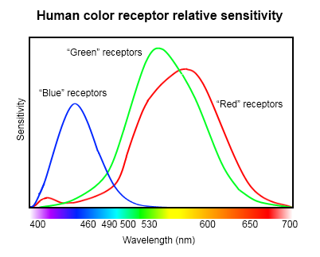
TOP TIP - Start projects early and account for accidents/time-loss while setting aside time for them. Always have regular things/people to remind you to do something for the project. Don't forget - perseverance is key!
TOPPER TIP - Workaholism is not as bad as it sounds.
TOP^3 TIP - Allocating blame doesn't help fix the problem, instead, think about what you can do to fix it now or reflect on how you can make it better next time.
TIP: Estimate how long it’s going to take you to write this and multiply it by 4. And that’s probably still not enough time.
TIP: To understand the game better, play SETTLERS OF CATAN (almost exactly the same game, with different terms, see ruleshere). Here is an online demo which you can play, this will give you a solid understanding of how the game works.
By learning from others, we gain the ability to teach others, and continue the cycle of knowledge.
The Project
The project is a course-wide competition between students based on a board game, where each player is a "Vice Chancellor", playing a board game on a hexagonal grid. The objective of the game is to reach 150 KPI points (Key Performance Indicator), and the first player to do so wins.
KPIs are obtained through a scoring system where VCs (Vice Chancellors) are represented through C programs that each student creates in order to play the game on their behalf.
The hexagonal grid has both "sides" and "vertices" upon which tokens can be placed, representing government grants, campuses, etc., with each token earning the VC KPI as the game goes on. At the beginning of each turn, the "government" rolls the dice, and based on the result, each VC gets "university students" that can be used to buy more tokens.
The competition will run for 3-4 weeks (according to Richard), where a group of 4 students will design the outline for an automated VC, which will then be programmed by students in pairs. It is suggested that COMP1917 students play the game with each other to understand how it works before they attempt to design or code their program. Two consecutive labs will be provided for students to design and familiarise themselves with the game.
Rules / Terminology of The Project (a.k.a Settlers of Uni)
Win Condition: Reach 150KPI and get that performance bonus!
- Normal campus - 10 points
- GO8 campus - 20 points
- New ARC grants - 2 points
- (Being the VC with the) Most ARC grants - 10 points
- Most research publications - 10 points
- For each major IP / patent - 10 points
6 Student types (Resources):
- Bachelor of Thinking (ThD)
- Philosophy, linguistics, politics, history, literature, social theories
- Bachelor of Problem Solving (BPS)
- Bachelor of How Things Work (B?)
- Accounting, hairdressing, accupuncture, IT
- Bachelor of prestigious TV Jobs (MTV)
Use your students to get points!:
- Cost: 1xBPS + 1xB? + 1xMJob + 1xMTV
- Convert a normal campus into a GO8 campus
- Cost: 1xMTV + 1xM$ + 1xMJob
Rules:
- ARC grants go along edges. Each ARC grant must be connected to a campus or another major grant by the SAME university. At most one ARC grant PER EDGE.
- Campuses go on vertexes. No two campuses can be on adjacent vertexes i.e. must be 2 ARC grants (edges) away. At most one campus per vertex. New campuses must be connected to one of your ARC grants.
- At the start of the game each of the three universities gets 2 campuses each with 1 ARC grant. Further campuses and ARC grants need to be funded from getting students.
- Universities take turns in throwing a pair of dice. The result determines which areas produce students. Campuses adjacent to areas which produce students get one student of the type the region produces (except GO8 campuses get 2)
- e.g. if a 2 and a 2 are rolled, then campuses near areas with 4 on them will produce a student (2 for GO8 campuses)
- If a university tries to start a business spinoff they can either get a research publication (2/3 chances) or some valuable IP/Patent (1/3 chance)
- Whenever a 7 is thrown all MTV and m$ students decide to switch to ThD's
- Any uni can retrain students, but it costs 4 students to produce one new student of whatever type the university desires.
- If a university has a retraining center the cost is reduced from 4 to 2 or 3 depending on the type of center.
- Campuses on a "?" have a general retraining center added on for free allowing you to retrain any 3 students into any another type (rate 3:1).
- Some campuses have a specialist retraining center added on for free allowing you to turn the specialised student type into any other type at a rate of 2:1.
- (No trading between uni's !!)
Tips:
- B? students aren't terribly useful, good for getting grants but that's about it, so you probably want them early on but not later into the game
- ThD students are useless.
- Create your Vice Chancellor / player early on so you can put it into the competition ASAP. Over time, you can go over the logs and see how your player worked against others, then add more intelligence to it and improve your player.
- How you are assessed on this:
- Indirectly - Writing neat, correct code, group-work and blogging about it etc.
- Directly - How well you go in the competition in terms of performance marks for the project
REVISION
STACK-like structure: the first thing that is pushed into a stack is the last that comes out (FILO) (First In Last Out)
- When getSteps needs to call another function (square), the execution stops there (and stores the details of its progress in agetSteps frame) and the flow of control jumps to the square function(and the square function's frame with store details like the input of the function/register and the return address )
- When the square function is finished, the flow of control returns to the getSteps function.
- When getSteps finishes, it returns to the main
- Every function has a frame and every function knows where it is so whenever you can getSteps, it uses the same frame in the same location (address 1000); likewise for square (address 2000)
- E.g. When the main calls another function (getSteps), the execution stops there (and stores the details its progress in themain frame ) and the flow of control jumps to the getSteps function. And every time you call getSteps function, it will write down the detail(eg: return address etc.) in to the same frame(which is , in this case, address1000).
What's stored in a frame (briefly)
- E.g. When getSteps calls square in line 5350, the return address in 5354 (suppose that the instruction is 4 bytes long) and 5354 is written in the square frame
- When main is working, it needs local space (in it's own frame because it knows what variables it needs and that will never change and how to get to this frame) to store its variables
- BUT main does need to tell some of its variables to the next function i.e. the arguments being passed in
- E.g. getSteps stores its own (local) variables, the return address, and the arguments being passed in
- likewise main stores its own variables
- The return address: the address of the point the previous function is up to before jumping to another function
- Variables
- Local register values
- The initial values in the registers (cp. Storing the value of R1 in wondrous microprocessor)
Disadvantages of knowing the address of the frames when it cannot be changed
- If two functions are using the same frame, they will overwrite each other
- Recursion may occur: if a function calls itself, it cannot freeze and call itself.
- If you know where things are stored you can mess with them
- It is wasteful of space (e.g. if there are 500 functions, you have to set up 500 frames, which could be really big) when a comparatively small number of functions are called at any time
- ALSO: Once the function can interact with the frame, it can stuff things up
STACKS
Frames are not stored in a fixed location in memory but in a stack which will be called as stack frames
- E.g. Suppose that there is stack pointer (which tells the program where to put the next frame i.e. where the free area is) that points to the first cell of the stack (e.g. containing BFFFFF)
- main starts running, and it needs space to store its local variables, so C or GCC builds and allocates a frame from the bottom of the stack, and then changes the stack pointer to the point above it.
- When a frame is needed for getSteps, it sets aside a new area of memory and adjusts the pointer to the point above this new frame.
- When getSteps calls itself, another frame will be set up for it
- When getSteps returns, the pointer moves down; and although there is memory still there, the next time a new frame is needed, the memory will be overwritten
- i.e. memory is automatically reused when a function return.
OTHER (regarding stacks)
- Frames are made during runtime and don't take much time i.e. function run-time overhead is quite short
- If there are too many functions calls in a program, you can sometimes 'unroll' some of the functions and inline them into the code. (However you will never need to do this)
- You can look inside the memory above in a stack.
- Computers work in segments (areas of memory) and puts a stack at the bottom of memory and it grows up
- It has another heap of memory above this, called a heap which grows down
- If the two meet, there may be an out-of-memory error...
- BUT the two share the same uncertain future
- If you asked for more memory the computer will give it to you from the heap(by setting a pointer at the start of that memory) and after that the heap will keep tracking(grows down to make sure that you are not out-of-memory)
- You can have multiple stacks for different purposes but it's the same idea
- E.g. Some operating systems have a stack that's very privileged and one that's unprivileged
- E.g. Cross-compiling an emulator into Java and downloading it into a user's computer; there's one stack that keeps track of the function calls in Java, and various others.
- You can arbitrarily change the stack pointer
- A stack overflow error occurs when the stack is too big
- malloc will return null
- Or system will return a segmentation fault (if things are in different segments, there'll be a segment violation or segment fault)
- Or something crazy will happen
- This is more common than a heap fault because the stack will just keep asking for memory, but the heap fault will request memory on the heap, and if it doesn't work then you'll know.
- Frames are not always the same size, depending on the number of local variables and the type of variable being stored
- Whenever the operating system sets up a new frame, it stores the old stack pointer inside the old frame. When you go back, you can fetch the old stack pointer and write it back into the stack pointer. By taking the difference between the two stack pointers, you can determine the size of the (old) frame stack.
- There is also a frame pointer that...will be explained and will appear in 8006.
MALLOC (intro)
Memory can be allocated dynamically (when there is a finite algorithm with a behaviour that is (potentially) unknowable or when a function is reading from an external file or from user input). This is requested at run-time, not compile-time.
- The heap is the area of dynamic memory that is used during runtime and is unplanned, unlike stack memory.
- Computer: "Can I have some more memory please" but the computer can not give you more memory in the stack, but it can give you more memory from the heap
- Unlike the stack, which starts at the bottom of memory and goes up to the top, the heap starts somewhere in the middle of the memory and moves down.
- The heap manager needs to keep track of the location (starting address of) every lump of memory requested by the different functions
- When a piece of memory is no longer needed, there is a gap in the heap
- The function that requests extra memory at run-time is called malloc (i.e. memory allocation):
- E.g. char *buffer = malloc (100);
- malloc returns a pointer to the start of this area such as100 bytes of characters or essentially, the pointer to an array of character or the start of the array
- the buffer is a pointer to a character and malloc will write into this pointer (normal pointer size: 4 bytes), the address of where the section of the memory in the heap starts.
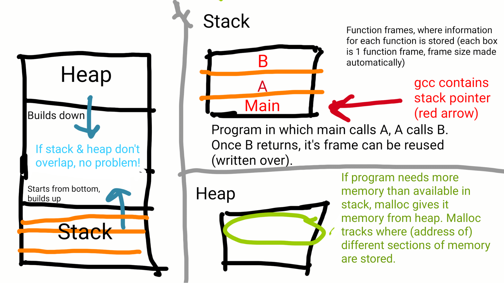
Exam Summary
This lecture introduces the function malloc(), which allows the assignment of memory dynamically (while the program is running).
- sets apart memory in the heap (see REVISION below), returning a pointer to this memory.
- new way to initialise variables: char *hello = malloc(sizeof(char)*1000); (Note: we use sizeof(); to avoid errors in mistyping size.)
- We use malloc(), when we don't know how much memory we'll need for data/variables at runtime.
- give a pointer to malloc'd memory to free.
- We free malloc'd memory to avoid memory overflow and leak errors. As a principle, free all malloc'd memory after use.
- It is also common practice to set the value of the pointer to malloc'd memory after freeing to NULL; this avoids using the data at the pointer after it has been freed (thus it will be used for other memory.)
REVISION
- Frames are stored in STACKS while the rest of the memory is in the HEAP
- STACKS load from the bottom, while the HEAP stores from the top
- Once a function ends, the stack pointer goes to the next frame, memory is freed up
- STATIC memory - allocated at compile time, doesn't change
- DYNAMIC memory - allocated at runtime, this is used when an unknown amount of memory is necessary
- i.e because of user input.
malloc ()
- returns a pointer to some free memory in the heap that matches the size (in bytes) you give it
- Unlike functions, which free the memory they were assigned in the stack on exit, malloc assigns memory indefinitely
- memory that is malloc-ed must be manually 'removed' (i.e. garbage collection) - otherwise you can get memory leaks, when you are using memory and you aren't handing it back.
- deallocates (or frees) the memory that malloc allocated, at that pointer.
- takes a pointer to the first address in that memory
- After you 'free' memory, make sure not to keep using it! Other functions may use it.
- A way ensure freed memory is not used it to set the freed pointer to NULL immediately afterwards
- char *buffer;
- buffer = malloc ((sizeof (char)) * 9001);
- ...
- free(buffer);
- buffer = NULL;
The heap manager keeps track of how much memory each function requests, so free() knows exactly how much memory to free up, and will tell the heap manager what area of the memory is free for use again.
- The operating system at the end 'should' free everything up
- the program preserves the memory in malloc while it's running in the world that the operating system gives it.
- The program won't hand its memory back to anyone, when you free memory, as its in its own bubble inside the operating system. When the program ends, It's the operating system's job to clean up that area of memory.
- Memory allocated to malloc doesn't cause the stack pointer to move back down the stack when a function returns.
- (?) You cannot allocate more than what is available in a heap.
- Generally, you should keep malloc and free in pairs to ensure you free up all malloc-ed memory.
NB: gcc does NOT always check if calls to malloc/free are logical and may not show warnings or errors.
- Note: some warnings and errors don't appear when compiling unless you add extra flags
- e.g. -Wall -Werror
- -Wall will display all warnings
- -Werror will make warnings appear as errors and stop the program from compiling.
- The C compiler just thinks you know what you are doing.
- You need to compile in extra checks such that errors will show up if there is, say, an array overflow at run-time.
- lint is a program that will look through your code in more detail to check if there are any errors in the code
MISTAKES
- keep allocating memory without freeing it
- => run out memory and your computer crashes
- accessing wrong memory (like an array overflow)
- freeing memory allocated by a different function (i.e: free(buffer); )
- Trying to allocate more memory than is available
- Assigning an incorrect amount of memory
- Use the sizeof() function when assigning memory to reduce the chance that you miscalculate the amount of memory each type of data needs
Richard's rule of thumb - "Never use malloc()" unless you need to.
Example code:
- curly braces {} are for declaring an array and initialising it
- use sizeof() for accurate mallocing
- when you malloc some memory, the address of the new memory is usually very different from the function frame's memory
- /* malloc.c
- * 1917-w123
- *
- * Created by Richard Buckland on 20/4/11. Edited 17/4/16
- * Copyright 2011 Licensed under Creative Commons SA-BY-NC 3.0.
- *
- */
-
- #include <stdio.h>
- #include <stdlib.h> //malloc() is stored here
- #include <assert.h>
-
- int square (int x);
-
- int main (argc, char * argv[]) {
- int x = 10; // we expect addresses to be stored lower in memory
- int y = 32;
- printf ("x is at %p, y is at %p\n", &x, &y);
- // e.g. "x is at 0xbffff75c, y is at 0xbffff758" n.b. there are 4 bytes between them
-
- x = square (x);
-
- assert (x == 100);
- printf ("DONE!\n");
-
- return EXIT_SUCCESS;
- }
-
- int square (int x) {
- printf ("x is at %p\n", &x);
- // e.g. "x is at 0xbffff740" which is slightly higher up than the lower frame
- char *buffer;
- buffer = malloc ((sizeof (char)) * 9001);
- // i.e. give me enough to store 9001 characters
- // if you misguess the size of char, it will still give you the right amount of memory
-
- buffer [2] = 23;
- // if you put square brackets after a pointer, it indexes into the pointer.
- // i.e. the 3rd element of the array is 23
-
- printf ("b[2] = %d\n", buffer[2]);
- // "b[2] = 23"
-
- printf ("buffer is at %p\n", buffer);
- // "buffer is at 0x801000"
- // i.e. the contents of the pointer, buffer
- // notice that the address that buffer points to is in the heap (much higher up)
-
- printf ("buffer is at %p\n", &buffer);
- // e.g. "buffer is at 0xbffff72c"
- // i.e. the address of the variable, (pointer to) buffer
- // notice that the address of the buffer variable is in the stack (in square's frame)
- free (buffer);
-
- return x * x;
- }
Some important differences to note in the above code:
| Code | Output | Location of Address |
18. | printf("x is at %p, y is at %p\n", &x, &y); | x is at 0xbffff75c, y is at 0xbffff758 | Stack - Main frame |
30. | printf("x is at %p\n", &x); | x is at 0xbffff740 | Stack - Square frame |
45. | printf("buffer is at %p\n", buffer); | buffer is at 0x801000 | Heap |
50. | printf("buffer is at %p\n", &buffer); | buffer is at 0xbffff72c | Stack - Square frame |
Note: The stack frame that stores the address of buffer (at %p, & buffer) is not cleared after clearing the memory that malloc had allocated. This may present a problem to programmers who wish to use the variable buffer. To clear this pointer & memory, you need to set the pointer to null through:
Char ptr*;
ptr = NULL;
HANDY METAPHOR
Compare the difference between buffer and &buffer (the pointer to the value containing the buffer) with when you need to go to the toilet, and you see the sign "TOILET" at the train station.
- The toilet is 9001 bytes big
- buffer is the sign "TOILET
Pointers and Malloc
- It's very important to understand pointers.
- If pointer buffer points to some memory, and you call free(buffer), what happens to buffer?
- It tells the memory allocator that that area can be reused and overwritten.
- buffer still points to the same address
- buffer's contents do not get reset.
- Good practice is to set the pointer to NULL to avoid accidentally using it.
- NULL- a reserved word in stdlib.h. It is a pointer that's guaranteed to point nowhere to avoid any errors in the future.
The Assignment
The Group Component
Need to:
- Write a representation of the game
- Write and run lots of tests
- Write a simplistic game engine that lets you manually play the game
Game.c
Need to create a type called Game in Game.c, you're given: Game.h
- Game is an abstract type - that means that the actual insides of Game.c are irrelevant, as long as everyone has the same interface then things will be able to interact with Game.c
- For example, a USB is global. As long as everyone adheres to the same interface, it doesn't matter what is inside, because the interface will just allow any user to correctly read the files. This is known as an Abstract type.
- Abstraction allows for coherence.
- A player should only think about playing the game
- And the game should only think about representing the game.
- Abstract type files start with a capital letter.
- The player will get the game and interrogate it about the game state by calling functions. Questions like:
- int getTurn(Game g) What turn is it?
- int whoseTurn(Game g) Whose turn is it?
- Some functions to be written:
- Create a game - Specifies all the regions of the map using an array of student types and dice values
- Dispose of a game - To free up memory
- Get current turn
- Get current points for a player
The Solo Component
- Write an AI that plays the game
- It's given the all the current progress of the game
- Needs to decide and return what its next move will be.
- Always submit something (that compiles and runs without crashing) each time, even if it isn't the best AI, so you at least get marks for something rather than nothing.
- Improve the AI incrementally, one feature at a time, so it gets progressively better at playing the game
- If you only submit during the last competition, It will be too late to get points
- Become very familiar with the game to come up with the best strategy, by playing the game.
Good software to use for project communication
- Skype
- Dropbox
- Git - (Github/Bitbucket)
Exam Notes
- C variable type declarations are very arcane and literal; any elaborate variable formats are applied to the name
- eg to create an array, [] is attached to the variable's name, and not the type used to declare it.
- The same goes for attaching * to the name of a variable to create a pointer.
- Make sure to use asserts to prevent overflows (especially in the exams)
The weird game C plays when you declare variables and their types
- All data types in C are defined using the main types - ints, chars etc.
- In C, we define variables as;
- <type> <variable> e.g. int x (the 'x' also denotes the area of memory implicitly)
- for example, princess buttercup;
- princess is the type, and buttercup is the person
- we don't normally say "lecturer richard"
- but we normally say this as "buttercup is a princess"
- buttercup (person) is a princess (type), has a sister called Pipa —> (sister of) Pipa is type princess
- normally we would say, pipa is a sister of princess
- but C elaborates the variable, "pipa has a sister who is a princess"
- which becomes (princess) (sister of pipa)
- So if sister of pipa is a princess then pipa is a princess
- If we want to refer to a pointer, "int *pointer", we would like to say;
- pointer is an int* (pointer is a pointer to an int)
- we could also say;
- (int *) pointer; (pointer is an int star)
- instead C does this;
- int (*pointer) (what pointer points to is an int, so pointer must be a pointer to an int)
- Variables which are not one of the main types have operations performed on them so that they become a main type
- For example, a pointer which points to an integer is not a main type
- An operation which can turn a pointer into an integer is dereferencing (*pointer)
- To define the pointer, we therefore use int *pointer, since (*pointer) is an integer
- In C, the type is mentioned first and object second
- int* p1,p2; becomes int *p1, p2, where p2 is not a pointer to int and thus becomes confusing
- typedef char stack[STACK_SIZE];
- In English/Boo: An array of characters is (now called, through typedef-ing) a stack
- X as int--> said in Boo language
Build your own stack type in 3 easy steps!
Remotes are annoying because they aren't standardised. Every single different device requires a different remote to use.
Unlike remotes, USB's are cool because regardless of where you get one from, its always going to work wherever you plug it in.
This is because the USB's have followed a spec to which everyone abides to. This is is one of the problems of design.
- DESIGN a stack type (stack.h) (interface)
- There are many decisions to make when coding of which the most important are made during the design phase since they are harder to change once implemented.
- Designs always have trade offs as there is never a perfect solution.
- The design process does not simply end after a solution is made. Designers always try to improve upon their solution. E.g "my chair is pretty good but it has too much wood".
- There are many ways to design, some are better than others, but it's not always clear which is the best answer from the start
- So, if you can, try everything, and find the one that works best.
- Contain interface and knows what it will need to use to interact with variables
- Example stack declaration:
- typedef char stack[STACK_SIZE];
- Essentially typedeffing stack to be an array of characters
- We design our stack with our basic functions
- push/add- will add and element to the top of the stack
- pop - will take the top element off the stack
- top - returns what exists at the top of the stack
- Write TESTS for the functions (testStack.c)
- Using asserts, you test the functions you want to make (this helps you understand how the functions should work) and will be the implementation
- It would be unfair to test functions that don't exist or the creator wouldn't have prior knowledge of
- Need to test for risks that might occur, for example when creating a stack, make sure that it doesn’t overflow —> knowing how big the array is
- You can use the function to "police" the function.
- But we have no way of knowing how big an array is if only a pointer to the first element is passed into the function
- Pass in the size of the array
- Pass in the pointer to the final element in the array
- Have the size of certain arrays #define-d so everyone can refer to it easily
- Have asserts to prevent overflows
- Use structs
- Function which asks how big the stack is
- Notify the user whether they are going overflow an array. Return an error message if this occurs.
- s = push(s, 'a'); // perform a function that alters the stack
- assert (top(s) == 'a'); // now use another function to check that both functions worked
- We use the functions to police the functions of the implementation
- IMPLEMENT the stack functions (stack.c)
- Make the stack work and interact with memory
- Where the functions are stored/called
- stack push (stack s, char element) { // add element function
- char top (stack s) // find the top element
- stack pop (stack s) // takes an element off the stack
- Duplication is bad and unnecessary as there are so many methods that could be better
- The ultimate problem: design (Richard gave Game.h and you will need to implement game.h)
- Design changes can make a huge difference. The design decisions make us happy. A job with no design would be like a robot making decisions
- e.g if the shape of a laptop charger is changed, it may affect how it is going to be used. A right angle bend may drag the laptop when pulled upon.
- With a stack, you can either add or pop (remove) something
Exam Notes
- Embed asserts for general stability, and save printfs for debugging.
- Writing code so that it can be abstracted easily will save you hassle.
Key points:
- sometimes it’s tempting to implement a function before writing tests
- write tests where only the functions that we intend to make are interacting only with each other
- better to only use these functions because it doesn’t depend on how the programmer stored and structured the external function
- certain tests test for completeness of functions assuming no errors
- other tests test for the specific problem within a function —> problem with this is that it relies on the fact that the structure of the code/variables remain constant over time
- when you test, test the functions you write based on how it interacts with other functions you write
- before writing function, write the interface first —> design first on pen and paper, then write the tests, and then write a bit of code, then tests, then code
- 'interface' refers to the functions that we are going to create for the program
- instead of writing the whole thing that’s not ready for the due date and has errors due to being rushed, write a simple version that is correct and on time, then improve it over time
- If we implement tonnes of code without testing it, we will never have time to test it. Instead we should sit down and design, then write tests and then implement code because in that way, although we might have less features, we can be garaunteed that they will all function correctly.
- abstract type where you only access it through the interface so that you can change the interface and it will still work through the interface
Designing
- char stack[STACK_SIZE];
- int size;
- int items;
- Problem: everything in this stack is about a stack so having char stack[STACK_SIZE] is not very useful that more clearly and precisely that says what is being stored in the array.
- Analogy: You have a library about triangles to manipulate triangles and do things with triangles, and had a function called triangle but there's no point having that function, you already know it's a triangle since it's in the triangle library, so if you wanted to add a colour in the function call it "triangle colourIn (triangle);" and not "triangle colourInTriangle (triangle)" because you probably don't need the information that it's a triangle. You might say it, if you're using it and you don't know what library it's coming from when you use it, I guess... but anyway, we know it's a stack so no point calling it a stack.
- char items[STACK_SIZE];
- int size;
- int numItems;
Testing
- To test the stack, all we have to test is that the functions work. If something crazy happens, but doesn't affect any of the functions, then it's irrelevant because as far as we know the only way we are interacting with the stack is through the functions.
- Change from asserting the exact values to using functions to test for future-proofing
- e.g.
- Bad / old method / Concrete:
- t = push (s, 'A');
- assert (s.items[0] == 'A');
- Intimately links with what the stack looks like as you need to know what's actually inside it such as the element numbers and variable names
- Because there exists a possibility for changes in the design, this type of assert is not that great because it is prone to breaking as you are testing things that are not interface functions
- Better for narrowing down (process of debugging)
- Good / new method / Abstract:
- t = push (s, 'A');
- assert (top (t) == 'A');
- 'Future proof'
- Doesn't depend on how you chose to represent the stack
- For a type likethis we are trying to test that the functions work well together
- Not what you're operating on that counts but what sequence of operations you use
- By abstracting our code, our debugging becomes a "divide and conquer" process, where we can continoually zoom into the code, finding where the problem is. The bad implementation is our process of testing, whereas the good implementation is our process of debugging.
- For example, the USB's can only be interacted through the interface, so we only care about what's in the standard, if you rely on anything that's not in the standard then things will break.
- For example, mircosoft's code had standard code for everyone to use, but it also had hidden functions that were not part of the standard. People started using these functions because they were more efficient, but when microsoft updated their systems, they only worried about the standards, and all the software that required the access to the hidden functions had broken.
- If you access things that you're not meant to access, in future, it may change and your functions will no longer work.
- Similarly, when we are testing game.c, because everyone's implmeneation may be different, we can only rely on the interface functions.
- Your testGame.c will defend you against bad game.c files, because your AI can only be matched up with games that pass the tests
Exam Notes
- If you're not sure about including a capability in an interface, don't. Only include it if you're sure you'll regret not doing so.
- Write a test file designed to test your main code as you go, building on it at the same time.
Structs are returned by copy, so we do not have to worry about memory that will be overridden like pointers.
Designing the interface and planning
- The simpler the interface, the more universal it is for interacting with other code.
- Just because we have an option doesn't mean we have to exercise it.
- You don't need a function to do every single thing possible, just the important stuff is enough.
- Ask yourself is this function incredibly useful? Is the cost of putting this in greater than cost of not putting it in?
- For every cool function you make (like blink) you have to code it, which will increase the chance of errors popping up and breaking the whole program.
- We want to be quick, fast and agile, so design the interface to be as small as possible. If we are given a huge complex system, we will have less incentive to use it.
- You can have a lot of functions in the interface, but then the functions become very specific and also time consuming to make.
- Many functions may also have to interact with each other in the tests, so if one function fails, lots of tests won't be passed.
- (Analogy: Don't use too many fonts and sizes)
- With great power comes great responsibility!
- Think not if a potential function could be useful in the future, instead, think if it is incredibly useful to have right now
- Is the cost of leaving a function in massively higher than leaving it out?
- If you're not sure, don't put it in.
- To get/retrieve information from an abstract data type, the name of the function follows <return type> get<what you're getting> (<from what type>);
- e.g. int getSize (stack s);
- To set/place information into a data type, the name of the function is the same as a "getter" but it's called set instead
- e.g. int setSomething (stack s);
Testing & Implementing
- Repeat writing tests for an interface function and implementing it in an incremental manner to create a coherent and working program.
- Remember to test to see if the functions conform with the spec
- Start with the easiest function as this is the best for an easy initial achievement (woohoo!).
- Leave the harder functions for last. After a few easy functions the harder ones may not seem as hard (or useful/relevant).
- If we start with the harder functions, we will spend too much time worrying about them and it will make our progress harder. If we start with the easier functions, as we write them, we might realise that our harder functions may become less complex.
- Put printfs everywhere so you know where your code has an error.
- Have a void testBlah function to test every interface function blah.
- Put suites of tests into a function. You have combinations of tests in a function to further test the interface.
- When writing functions, make sure you always check for errors that can be produced through user input
- i.e. check for buffer overflows and that you have spare capacity to add/remove/alter information in the data type.
- If a test fails, check that you’ve implemented it correctly
Example newStack() test and function:
- printf ("testing i can create a stack\n");
- s = newStack();
- printf("passed!\n");
- stack newStack (void) {
- stack s;
- int pos = 0;
- while (pos < STACK_SIZE) {
- // not a pointer to an array so the values will be copied out on return
- s.items[pos] = 0;
- pos++;
- }
- s.maxSize = STACK_SIZE;
- s.numItems = 0; // initially empty
-
- // the entire struct is copied back into the calling function
- return s;
- }
Other example tests and functions
- printf ("testing push\n");
- s = push (s, '?');
- assert (getNumItems (s) == 1);
- assert (getMaxSize(s) == STACK_SIZE);
- assert ("passed!\n");
- stack push (stack s, char element) {
- assert (getNumItems(s) < getMaxSize(s));
- s.items[s.numItems] = element;
- s.numItems++;
- return s;
- }
-
- char top (stack s) {
- assert (getNumItems(s) > 0);
- return s.items[s.numItems - 1];
- }
-
- stack pop (stack s) {
- s.numItems--;
- return s;
- }
- // Richard's Example
- while (in[pos] != '\0') {
- buffer = push (buffer, in[pos]);
- pos++;
- assert (pos < SIZE);
- }
-
- pos = 0;
- while (getNumItems (buffer) > 0) {
- //Rather than the mistake: buffer.numItems != 0
- //which assumes you know what the struct looks like [violating abstraction]
- out[pos] = top(buffer);
- pos++;
- pop (buffer);
- buffer = pop (buffer);
- }
- out[pos] = '\0';
- printf("%s reversed is %s\n", in, out);
Note: A temporary array is also known as a buffer.
Richard's words of wisdom:
"Users should never assume they know anything about the insides of a car... or a data structure."
"You must not ever make use of any knowledge you have about how an abstract type is implemented, as soon as it's implemented, it's a concrete type."
In this way you should only ever interact with an abstract struct using the supplied interface functions
Note: You will need to understand and wrap head around structs otherwise you won't be able to progress through the remainder of course if you are unclear on them
ADT (Abstract Data Type)
An ADT is a mathematical model for data types, where a data type is defined by its behaviour from the user's point of view (specifically in terms of possible values and/or operations on data of this type, and the behaviour of these operations)
Note: Difference between data structures & ADT --> data structures are concrete representations of data, and are at the point of view from the implementer, not the user.
We're acquainted with data types by now, like integers, arrays, etc. To access the data, you've used operations defined in the programming language for the data type, (e.g. accessing array elements by using the square bracket notation). This approach doesn't always work on large programs in the real world, because these programs evolve as a result of new requirements or constraints. However using this approach you can make large changes to the interior without changing the function, as from a user point of view, nothing changes.
A modification to a program commonly requires a change in one or more of its data structures. E.g. adding a new field to a personnel record to keep track of more information about each individual or a bit field might be changed in the process of moving the program to another computer. You don't want such a change to require rewriting every procedure that uses the changed structure. Thus, it is useful to separate the use of a data structure from the details of its implementation. This is the principle underlying the use of abstract data types.
- It's really important that a programmer never knows or makes use of the contents of the struct that is an abstract struct.
- The only time anyone can make use of their knowledge of how the struct is laid out, is the very file that defines that struct and gives you the interface functions.
This is why in Richards tests he warned people not to use tests that look into the array at a particular index, instead he outlined using the interface functions of pop, top and push.
In the words of Richard's car analogy:
ADT's are like cars:
- You are the user of the car, you can drive the car.
- The car was made by someone (a factory) - they know all about the insides of the car, so for them the car is a concrete thing.
- The user who doesn't know about transmissions or gears or differentials and sees the car as an abstract object. Albeit one with functions like a go faster button, a turn on button, a turn left/right function.
- Because the functions imply the interface of the car, the user can still use the car without fully understanding the car.
- Implementations might change, but as long as you still have the same interface, users can keep using it as nothing would break.
- Users should know as little as possible about the implementations of functions.
- e.g. User knows an undocumented (non-standard) feature that whacking your head three times on the steering wheel knocks a wire out of the engine and gives you a quick way of stopping. But what if you go into another car and try banging your head to stop instead of using the pedals? Thus, Microsoft's awful obligation called backwards compatibility might arise, which is, you now have to support all the undocumented features or else your car might mysteriously break when you upgrade.
Some Examples of the usage of ADTs -
As stated in the car analogy ADTs is a model of a structure, NOT the structure itself.
Linked Lists, Array Lists, Stacks are all data structures used as ADTs. They typically:
- Initialize data
- Remove data
- Access data
- Add data
To extend on the car analogy, in terms of the user if you wanted to turn 'right', you would push 'right' on top of the stack, and to go back to the original state, which is probably moving forward, you would 'pop' of the stack.
Another example would be registers on a microprocessor. Typically Microprocessors CANNOT read parenthesis so something like 3 * (1 + 2) would be read as 3 * 1 + 2. They ofcourse give different answers, 9 and 5 respectively. As such ADTs can be used in a stack structure model, to ensure that the order is:
1
2
+
(at this point the answer is now 3 - we 'add' in this case the values in the stack every time an operand is called)
3
*
(We multiply at this point)
3 * 3 = 9;
Concrete Data Types:
Concrete data types are defined by the first letter being a lower case letter while the first letter is an upper case letter in an abstract data type.
Using interface over the implementation
We could achieve this by never releasing the source code. But if we do this, we would never be able to see it. It would be similar to saying that a painting is so precious, and we want to make sure that nobody will ever touch it, so we cover it up in a concrete case so no-one can touch it. But as a result, no one can see it either.
We only need to stop the user from accidentally using the implementation (or the stack)
We can hide our implementation from the programmer by using a pointer to a struct, and C won't give any more information, because it doesn't care what is in the struct.
Game.c
- typedef struct _game {
- ...
- } game;
Game.h
- typedef struct game *Game;
Our concrete types are in lowercase and our abstract types are in uppercase.
If RunGame.c or AI.c requires to use Game, then we can only do so using the interface functions that are defined in Game.h.
Everything will be passed by reference, as we are passing around the pointer.
The importance of being a good person
Richard finishes the lecture outlining the effect of stress on our natural tendency to be nice to ourselves and others. As the world increases near the end of semester people tend to find that they are sleeping less, forcing themselves to do more work and being irritated with people around them (this can be especially problematic in group work).
We must remember that even if our group work goes to pieces, or we become very stressed, you must always treat each other with respect and courtesy because that is what really matters at the end. Be kind, and calm to each other and don't get stressed.
One way to counteract this is to reflect on what type of person you are:
- NORTHERN - successful and rich, always putting a lot of pressure on yourself to perform perfectly in all aspects of work, inducing a high amount of stress, working hard.
- SOUTHERN - relaxed and happy, laid back and not too worried about the outcomes
Although both of these type of approaches are beneficial in their own right, Richard stresses the importance of trying to move more in towards the middle (either finding ways to de-stress as a North person, or putting plans in place to encourage you to do more as a South person) in order to find BALANCE and a sense of CALM.
Accompanying video code (final version)
Stack.h
- // interface functions for an abstrack stack
- // implemented as an array
- // richard buckland
- // 28 April 2014
- // edits by Salil - 24 April 2015
-
- #define MAX_STACK 100
-
- typedef struct _stack *Stack; //Stack is an ADT
-
- int top (Stack s);
- void pop (Stack s);
- void push (Stack s, int value);
- Stack newStack(void);
- void freeStack(Stack s);
- int getSize(Stack s);
- int getMaxSize (Stack s);
Stack.c
- #include <stdlib.h>
- #include <stdio.h>
- #include <assert.h>
- #include "Stack.h"
-
-
- typedef struct _stack {
- int contents[MAX_STACK];
- int maxSize;
- int size;
- } stack;
-
- int top (Stack s){
- assert (s!= NULL && getSize(s) > 0);
- return s->contents[s->size-1];
- }
-
- void pop (Stack s) {
- assert (s!= NULL && getSize(s) > 0);
- s->size--;
- }
-
- void push (Stack s, int value) {
- assert (s!= NULL && getSize(s) < getMaxSize(s));
- s->contents[s->size] = value;
- s->size++;
- }
-
- Stack newStack (void) {
- //allocate memory on heap to store the stack
- Stack baby = malloc(sizeof(stack));
- assert(baby != NULL);
- baby->size = 0;
- baby->maxSize = MAX_STACK;
- return baby;
- }
-
- //free the memory allocated on heap for the stack
- void freeStack (Stack s){
- assert(s != NULL);
- free(s);
- }
-
- int getSize (Stack s) {
- assert(s != NULL);
- return s->size;
- }
-
- int getMaxSize (Stack s){
- assert(s != NULL);
- return s->maxSize;
- }
stackUser.c
- // stack user
- // uses abstract Stack
- // compile as - "gcc -Wall -Werror -O -o output stackUser.c Stack.c"
-
- #include <stdlib.h>
- #include <stdio.h>
- #include <assert.h>
- #include "Stack.h"
-
- int main (int argc, char *argv[]) {
-
- printf ("testing concrete stack defined in stackImproved.h\n");
-
- printf("testing newStack\n");
- Stack s = newStack();
- printf("passed\n");
-
- printf("testing getSize\n");
- assert (getSize (s) == 0);
- printf("passed\n");
-
- printf("testing getMaxSize\n");
- assert (getMaxSize(s) == MAX_STACK);
- printf("passed\n");
-
- printf ("testing push\n");
- push (s, 5);
- assert (getSize (s) ==1);
- assert (top (s) == 5);
-
- push (s, 4);
- assert (getSize (s) ==2);
- assert (top (s) == 4);
- printf("passed\n");
-
- // now pop off the top element and check that
- // the stack returned has just one element in it
-
- printf ("testing pop\n");
- pop (s);
- assert (getSize (s) == 1);
- assert(top (s) == 5);
-
- pop (s);
- assert (getSize (s) == 0);
- printf("passed\n");
-
- printf ("All tests passed - you are awesome!\n");
-
- freeStack(s);
- return EXIT_SUCCESS;
- }
Defining an ADT
- When creating an ADT, the interface functions are the only functions in the header file. Other functions used internally in the Game.c file should be declared within this .c file, and be defined as static functions to avoid accidental use outside the Game.c file.
- The header file serves as the interface between the user and the ADT.
When defining an ADT, first set up the struct _game with the required fields in game.c
- typedef struct _game {
- int number;
- } game;
Then typedef Game (using capitals to show that it is an ADT) as a pointer to struct _game. We use a pointer to hide the actual implementation of struct _game from the user.
-
- typedef struct _game *Game;
-
Lecture Game.h code
- #define NUM_COLUMNS 7
- #define NUM_ROWS 6
- #define EMPTY_CELL ' '
-
- typedef struct _c4Game *C4Game;
-
- C4Game newC4Game (char player1, char player2);
- void showGame (C4Game game);
- int hasSpace (C4Game game, int column);
- void dropIntoColumn (C4Game game, int column);
-
- //as mentioned above, internal function should not be declared in the header file
- // so setCell is removed from Game.h to Game.c, with static
- static void setCell (C4Game game, int col, int row, char contents);
-
- char getCell (C4Game game, int col, int row);
- When creating a new game using the function newGame, it needs to return a pointer to the struct. This means that the struct doesn't get copied, only the pointer is copied. Thus, we need to allocate some memory to the struct using malloc. If we don't do this, the memory in the struct will be lost, because it will exist inside the stack, which will disappear when the function leaves the stack.
- Because we are using a pointer to a struct, unlike passing a copy of the struct, we are only passing a copy of the pointer.
- The struct C4Game is a pointer to the struct _c4game which is defined in the .c file, to provide abstraction.
- When malloc'ing, make sure that you use the size of the struct, and not the size of the ADT, because that is how much memory we want to allocate.
- C4Game new = malloc(sizeof(c4Game)); //Note that this creates a pointer to a c4Game struct
- To reference the fields in the struct using the pointer, use:
- (*new).variable1 = value;
The danger of the for loop is that it introduces complexity all on one line which is where errors could hide
Writing Stub Functions
Stubs are useful when you want to test your program but haven't written all the functions. In order for gcc to compile your code, all functions other than void must return something. A stub function often returns a 0, or returns something that is passed into the function. They usually don't actually do any computation, and will be properly implemented later in the project.
Helpful Coding Tips
- Put repetitive code in a function and give it a name that lets programmers easily identify its purpose
- You are definitely allowed to make extra functions in the C file, that weren't specified in the header, to make your code clearer.
- Keep code simple and clear rather than just trying to minimise numbers of lines in code
- - 2 dimensional array defined by int 2DArray[NUM_ROWS][NUM_COLUMNS]
Search Problems:
- Most computing problems are search problems.
- E.g. searching for errors in code.
- When you have a finite amount of time and have to look for something:
- Search randomly.
- If this doesn’t work, change strategy, otherwise, it will take to long.
- When you know that you’re on the right track, you are more likely to be motivated and therefore find the error much quicker.
- Be systematic:
- e.g. Grid approach to searching
- Brute force won't always work since:
- There could be infinite levels of abstraction to search on.
- It's inefficient for large problems.
- Best way is to divide and conquer:
- Isolate the areas where the problem isn't located.
- Add printf’s at certain stages to find where the program stops.
- Narrow the error down to a single line or section.
- Split the problem up into different areas which you know how to compose into the larger problem.
- After enough iterations of this, you will reach a stage where the subproblems are trivial to implement.
If you can't find the problem, then sleep on it or take a break otherwise you'll become inefficient.
A log book is useful to look back on to find and work out what the problem might have been when you follow through it.
Richard's Strategy for Debugging a Program:
- Make a copy of the code.
- Using zoom-in method, magnify the inside of function and limit the scope when you zoom each time.
- Write down all the tests that you have performed and their outcome. This will help isolate where the error is.
- Delete entire functions or create dummy functions.
- Write down the inputs that cause the error.
- Ensure that the error occurs multiple times with those exact inputs.
- Write a test to check those inputs that cause the error. Ensure that this test fails for the moment.
- Once you have narrowed down where the error is, finding the issue will become much easier.
Project Management Approaches:
Approach | Description | Advantages | Disadvantages |
Random | Randomly complete tasks as they get given to you. | Some tasks will get complete. No thought has to be put into the tasks that get done and when. | Important tasks may not get complete. Pointless tasks may get complete, reducing the amount of time available for important tasks. |
Systematic Approach | As new tasks come in, add them to the bottom of the list and systematically work through them all, top to bottom. | Much better than the Random Approach. Everything will get done…eventually.... Clients can continually add tasks to the list. | May not achieve things in time. Not enough time for everything to get complete. Clients can get frustrated when their task is not completed immediately. If you get stuck on one task then you could waste time trying to figure it out when you could be completing the next task. More important tasks may get completed just because they came up earlier. |
Agile Approach | The agile approach is a way of shifting project control to the client. This is done through consistent collaboration between the developer and the client. | Main priority is a high-quality output. Clients have the ability to control the priority of tasks. Clients can choose what does and does not get completed. Clients can choose when a project ends depending on when they are satisfied with the product. Clients feel actively involved in the project, reducing the blame that may get put on the software developer. | Takes more planning and thought. Teamwork and communication between developer and client is important for the approach to be successful. |
Managing Projects:
- Successful projects are hard to achieve because there is limited time to satisfy all the required tasks and features.
- Choose things you will finish and don't stress over things you won't.
- Software Projects:
- Scope - List of all the jobs. This is always too big to start with.
- Resources: Time and people - There is never enough of either.
- Deadline: An external constraint to the project that can't be changed.
- Code Quality (important): This is the only part that can be changed. The final product's quality is affected by the other 3 components, and so it is usually the part that suffers.
- When adding tasks, don’t just add it on the top of the stack but choose where in the stack it should go depending on how important it is (keep this in mind when writing your AI).
- Can rearrange the list as much as you need
- Make sure to continually consider priorities as your knowledge of the problem expands over time (which it always will).
- static functions should be initially declared in the .c file that the function is local to
- Don't spend too much time trying to perfect something.
- Improve it in small, discrete steps. This ensures there is a working product at each step, even if it isn't at the desired efficiency
- First hand in the basic file that does the important functions.
- Then improve it in more small increments.
- Make sure there is good communication and testing throughout the process.
- Keep this in mind for the project AI.
Doing everything in one go where you collect the requirements from the start will not always work because time will change requirements, or you might miss the deadline, or something might break.
Software Engineering in Business
- Time management is extremely important as the software engineer must meet the deadline of the due date
- The client never has a detailed plan of how to implement their solution, like we did in our projects.
- The developer will inevitably have to make sensible assumptions, and more importantly, keep the client continuously informed and providing feedback, so the product sufficiently meets their needs.
- Communication between the client and the developer is crucial.
- It is the engineer's responsibility to have a high understanding of the client's requirements.
The People In Charge(tm) might not agree with you.
- They might have ideas for the project that are inefficient.
- Their ideas might be ludicrous and impossible to implement reasonably.
- When using an Agile methodology, they might keep changing the priority of the features they want
So then what happens...?
- It's the programmer's responsibility to bring up these issues.
- The different levels of abstraction you and the "higher-ups" possess is in fact an advantage.
- Both voices need to be considered when implementing a solution.
- If you think your client/boss isn't making the right decision, give them more information such that they can make a more informed decision
- Phrase the issue using language that they understand e.g. a "design debt" due to poor code quality, having a cost of 10 working hours per month, because we have to work around things that we could have avoided by implementing them earlier
- Set out the risks of potential decisions e.g. if this decision is prioritised, there is a significant chance user data and therefore customer trust and loyalty could be impacted.
- "if we leave it as is, there is a low probability that our customer data might be compromised."
- You must keep in mind that your goals will always be similar. (hopefully)
Eurovision!
Denmark 2011 Performance
Wuthering Heights - Emily Brontë
- Richard's Favourite Part - Top of page 86 (where somebody did not wander)
SPOILER - Winner of Eurovision 2011:
Arrays
Why are arrays good?
- They can store multiple things
- They are indexed
- Allows us to get any element in the array at the same time (Random Addressing).
- Arrays are good because we can store multiple things, they can be indexed that means we’re able to get any element in the array in the same amount of time (one step). i.e. pointerArrayStart + sizeof(arrayElements)*n to find the nth element of an array
- Book analogy: When asked to find "the thing about the black press", a student didn't know where to start. When asked to find what was at the start of page 86, he was able to use pages to find the location quickly.
Why are arrays bad?
- You can't easily insert elements without shuffling everything around.
- An index to find a piece of information is not so meaningful (usually).
- Arrays have a defined ending (fixed size).
- Elements must all be the same size and type.
- For the compiler to find an index, it has to know:
- What the index is.
- How big each element is.
- Inefficient use of memory
- Each element must have enough memory to store the largest amount of data that the array will ever receive.
Flexible/Dynamic (Unbounded) vs Bounded Lists:
- Bounded lists are restricted in that they are initialised to have a defined size that cannot change if more data needs to be appended.
- Flexible lists are not restricted by a defined size the same way bounded lists are.
Danish way of implementing functions (revision)
- Start with easy things and move on to the harder ones.
- Time management - Depends on what client wants.
- Psychologically, makes you feel good about yourself and build confidence :)
- If the easy functions require you to first write a more difficult function, be very Danish about writing your harder function, then add more features as need be.
Lists
List Data:
- For each item of the list, store the value of the node and a pointer to the next item.
- The last item should point to the NULL pointer constant to convey it is the last item in the list.
To add a new item to the end of the list:
- Make a new node.
- Put the number to be stored in the new node.
- Place the terminating marker in the new node.
- Change the previous last node to point to the new node (remove its terminating marker).
To add a new item to the start or middle of the list:
- Make a new node.
- Put the number to be stored in the new node.
- Copy the pointer to the following node from the previous item (or start) into the new node
- Change the previous last node to point to the new node.
Note: steps 3 and 4 must be done in order otherwise you will overwrite the pointer to the next node
Removing nodes
- Remember that all nodes have been assigned memory through malloc(), and therefore will not be automatically removed if not used.
- You must free() the memory used for the node when removing it.
Length of lists
- "Traverse" the list, counting each node as you encounter them, until you reach the last node.
- See length function developed below
Code Developed as of this Lecture
- // List.h
- typedef int item;
- typedef struct _list *List;
-
- List newList (void);
- void showList (List l);
- int length (List l);
- item getItem (List l, int position);
- void appendItem (List l, item i);
- // List.c
- #include "List.h"
- typedef struct _node *nodePointer;
-
- typedef struct _node {
- item data;
- nodePointer next;
- } node;
-
- typedef struct _list {
- nodePointer first;
- } list;
-
- list newList (void) {
- List new = malloc (sizeof (struct _list));
- assert (new != NULL);
- new->first = NULL;
- return new;
- }
-
- int length (List l) {
- int count;
- count = 0;
- nodePointer current;
- current = l->first;
- while (current != NULL) {
- count++;
- // current = current->next;
- current = (*current).next;
- }
- return count;
- }
-
- void showList (List l) {
- }
-
- item getItem (List l, int position) {
- return 42;
- }
-
- void appendItem (List l, item i) {
- assert (l != NULL);
- nodePointer newNode = malloc (sizeof (struct _node));
- newNode->data = i;
- newNode->next = NULL; //What Richard wrote in this line is incorrect, he corrects it in next lecture
- l->first = newNode;
- }
- // testList.c
- #include <stdio.h>
- #include <stdlib.h>
- #include <assert.h>
- #include "List.h"
-
- int main (int argc, char *argv[]) {
- printf ("Testing newList\n");
- List l = newList ();
- assert (l != NULL);
- printf ("Testing an empty list has size 0\n");
- assert (length (l) == 0);
- append (l, 86);
- assert (l != NULL);
- assert (length (l) == 1);
- printf ("All List tests passed! You are Awesome");
- return EXIT_SUCCESS;
- }
NOTE: Don't start numbers in C with a 0 (Eg. 015) since the compiler interprets all numbers beginning with a 0 as base-8.
The key to successful programming:
1. Always plan before you code so that you limit errors and coding time.
2. After you plan, plan some tests to test your program
3. Create your function and test it
4. When checking errors, always attack errors from the top of the list down, due to the other errors may have a flow on effect.
Linked lists are like a treasure hunt
Unlike a scavenger hunt where the clues are given to you all at once, a linked list is more similar to a treasure hunt: you must follow the clues sequently to find the end (NULL).
This allows for clues to be added and altered along the way: a flexible list of clues that has no fixed length.
Note about debugging: Always look for the first error and try to solve it before tackling any of the other errors. Chances are that fixing the first error may fix all the others.
Helium Balloon Analogy
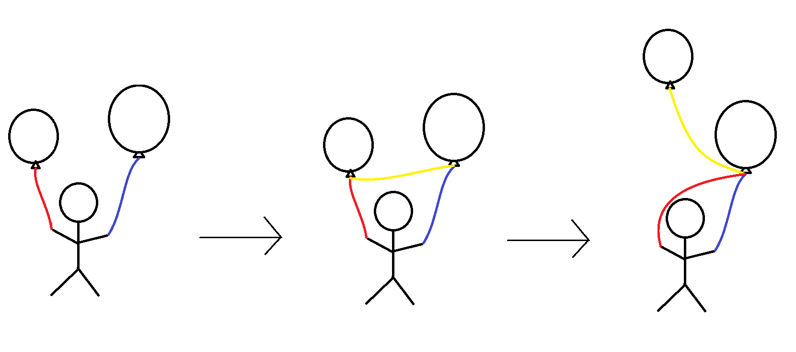
Important: The newNode [blue string balloon] must first be made to point to the next item in the original list [on the red string balloon] before the Starting List is altered to point to newNode. Otherwise, the address of the next item in the original list will be lost forever, just like letting go to a helium balloon.
Append Items in a List
- void appendItem(list l, item i) {
- assert(i != NULL);
-
- // 1. create new node
- nodePointer newNode = malloc(sizeof(struct _node));
-
- // 2. put data into new node
- newNode -> data = i;
-
- // 3. the pointer in the new node points to the old node
- newNode -> next = l -> first;
-
- // 4. tell the list where the start of the new chain is
- l -> first = newNode;
- }
-
Debate over pathing on or off the map
- Reasons for being able to path off the map:
- It makes sense in a coding sense, and it's reasonably valid (e.g. you take a boat around the island and then come back)
- It's easier to code if you go off (depending on how you implement it)
- You don't have to check if it's on the board while you're moving, but only if the final location is on the board.
- The game never gives a path back
- You should always be ready for the worst possible scenario (e.g. bigger board sizes, might destroy code, so you should write more general code, that can adapt when specs change, i.e. pathing off the board more adequately deals with different board sizes)
- Reasons against pathing off the map
- Doesn't make sense since the realistic board doesn't have hexagons and paths off the board
- If you change the spec so that pathing off the map is not allowed, a lot of people might need to change their mechanical turks (AIs) but the trade-off is that no one has to change their Game.c
The heart of abstraction
- Does the spec say that the light has to be white, the way you give lectures doesn't depend on how the colour of the light. There's nothing in the spec saying you can't have laser-beam death-inducing lights.
- There are ways of pathing off the board that can cause segfaults (like a laser beam going through your head and exploding your program). If the spec said you can path off the board, you would then be unable to create a board that could segfault from pathing off the board. The spec has been silent on whether you can go on or off the board. (e.g. physical map that says you can't go off the board on the other hand, vectors say you can go off the board).
- Need to come up and agree on a common interface, that everyone completely agrees with, and if there's any ambiguity, some people might rely on the ambiguity being interpreted one way or another.
Danish (Agile) Programming
- Focus on the principle of decoupling and coherence
- Functions are not heavily interrelated with each other and can be easily reused when necessary with other functions
- Things in the same area work together while things in different areas do different things.
- When the spec changes just change your code to get it to work.
- 1980s Richard Buckland, why would you write code that when you change would break everything, if you change it everything would be a nightmare because the cost of change is so high it's terrifying
- 2011 Richard Buckland, make suite of tests, that tell us when the code is right or not, so just make small changes that happily breaks our code, and following the principles of decoupling and cohesion, it's actually quite fast to change the code especially with the help of our tests
- You can quickly rebuild your work to make sure your tests work
- Then you change it so that the code quality becomes awesome (refactoring) i.e. go through and decouple and move coherence around.
Richard's Thumb of Rules (or Rule of Thumbs)
- Make it concrete the first time.
- When you see two instances of it, make a call whether to make it general or concrete.
- If you see three instances of it, you really should make it generalised.
- make your program flexible, but not at the cost of simplicity
- e.g. if the test only tests of linked lists of length one, you're not forced to write tests of longer than length one
- Don't repeat yourself
- Think about refactoring and making things more coherent.
- Why waste time making features of far greater complexity than it needs to be for a simple feature that the client needs?
- You should not write your program so that it anticipate changes in the spec.
8006
Suggestions
- 255 is not enough.
- Pain to deal with frames
- Stack is a pain
Operation Ideas (Richards ideas of what to implement)
- Double the registers (4 instead of 2), allows for 16 bit addition
- Segment register (positions of frames are relative to this register)
- Load relative (using segment register access data according to how far away you are from the address of the segment register)
Puzzle (big & little Endian)
- Big endian - largest numbers at the start of int (0s if empty), smaller at the end.
- Little endian - smallest number at start of int, then continue to make larger numbers
- Intel uses little endian
- see code at bottom of page for examples of how to implement this.
Segmentation Faults
- You don’t have the right permissions to read / write to a piece of memory (this prevents you from doing something completely stupid like writing over RAM used by core systems in the OS.
- Only Arrays & Pointers can do this (array overflow).
- Mudflap is built into gcc and checks for segmentation faults (you can use it instead of checking manually to ensure you aren’t creating any problems with how you are accessing memory).
- Use GDB (debugger).
- Use GDB (debugger)
- Use -g to display line numbers.
- When using compile with gdb don't put the -O tag in and put -g. This tells the compiler to record line numbers and when it crashes gdb will tell u what line it crashed on.
The Example Code
- #include <stdio.h>
- #include <stdlib.h>
-
- typedef unsigned char *bytes;
-
- void firstAttempt(void);
- void secondAttempt(void);
- void thirdAttempt(void);
-
- int main (argc, char *argv[]) {
- printf("Program to find out if this machine is big or little endian\n");
-
- firstAttempt();
- secondAttempt();
- thirdAttempt();
-
- return EXIT_SUCCESS;
- }
-
- // This will always be 1 regardless of the endianess
- // because it takes in the least significant byte
- void firstAttempt(void) {
- printf("First attempt\n");
- int x = 1;
- // typecast x as a char i.e. convert x to a char
- char c = (char) x;
-
- printf("x is %d/n", x);
- printf("the least significant byte is %d\n", c);
-
- return;
- }
-
- void secondAttempt (void) {
- int x = 0;
- int *p;
- p = &x;
- char *charPointer;
- charPointer = (char*)p;
-
- if (*charPointer == 0) {
- printf("It's 0!\n");
- } else if (*charPointer == 1) {
- printf("It's 1!\n");
- } else {
- printf("ERROR!!!\n");
- }
- }
-
- void thirdAttempt(void) {
- int x = 356;
- bytes bytesOfX = (bytes) &x;
-
- printf("X = %x %x %x %x\n", bytesOfX[0], bytesOfX[1]
- bytesOfX[2], bytesOfX[3]);
-
- return;
- }'
SUMMARY
- It is important to improve code using correct development methods and appropriate testing (professionalism)
- LinkedLists are a key feature in the upcoming exams! Therefore, it is important to pay attention and really try to understand the concept
- When trying to create linkedList functions use images and diagrams for clarity
- The best approach to fixing a bug is considering what the characteristics of a good bug are in the first place
Professionalism:
How can you tell if a code is flawless? Is it possible to make code without bugs?
These are questions that are raised in the lecture, and while it is virtually impossible to know for certain if code has a bug or not, there are steps that lead us towards becoming more certain that our code is without error:
- having a good testing plan
- a good design approach
- writing code with good style
- peer review
These factors have been a core focus of the testing and correctness part of the Comp1917 course.
Delete function in linked List:
So suppose a list looked like this:
In the delete function we would have to do this:
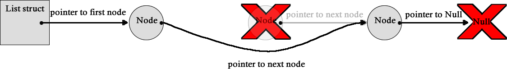
To do this we would have to store pointers to the node we want to remove, and the nodes before and after it. We then delete the target node using the free() function. Then, set the pointer stored in the previous node to the pointer pointing to the node after the deleted node.
Deleting the first (0th) element or the last element of a list are special cases.
For the first:
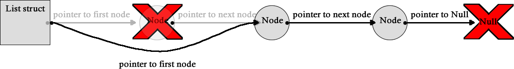
First store pointers to the 0th and 1st node in the list, delete the 0th node (with free()) then make the pointer in the list struct point to what used to be the 1st node.
For the last:
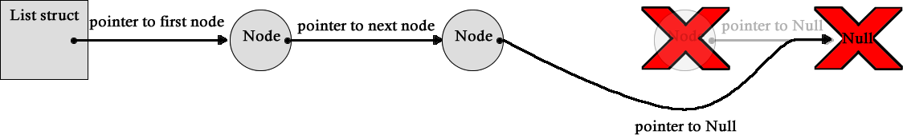
Similarly for deleting the last you store pointers to the last and second last node, you then delete the last node (with free()) then get the pointer in what was the second last node and make it point to a NULL.
Also, when doing the delete functions or just when using free() in general, it is good practice to set a pointer to NULL after you free it.
Understanding the Bug and prevention:
Knowing what makes a "good bug" is useful in the detection and prevention of bugs,
Bugs in the project
The idea of testing and error detection plays a big role in the project. One form of bug which may appear in AIs are cheats which are hidden inside other players AIs, these can be hard to detect but can have massive effects on the game. Because of this, we need to ask a lot of questions like "How could you defend against a game that waits for 200 moves before doing something malicious?", and ways we could do this is by doing things like testing long games.
Considering the features of a good bug
- it needs to be subtle - hard to detect and occurring rarely
- it can mask its behaviour and location
- it makes itself valuable to the code - i.e. the programmer doesn't want to remove it
- it is triggered by external factors and therefore not triggerable in testing
- fixing it just makes things worse
By considering these features we can adapt our tests to account for and defend against "good bugs".
Further in-depth characteristics of a good bug
Subtly: if a bug is hard to detect and it occurs rarely it can be hard to fix, as often there are bugs which will only appear in obscure circumstances and may only cause small errors which are hard to notice. Thorough testing can help uncover some of these bugs as the more areas of your code you're testing, and the more scenarios you are accounting for, the more likely you are to find the bug.
sticky: sometimes when you find bugs you can feel that you don't want to remove the bug. One of the most common reasons is because fixing the bug would require a lot of work, as you may have to rewrite a large segment of code or restructure your whole program, or if it's a complex bug, fixing it could cause other bugs (this usually happens when you make a lazy "band-aid" like fix for a bug)
not triggerable in testing: sometimes the conditions required to reproduce a bug can not be created in a testing environment, or the tools you're using to test your code could prevent the bug from happening (this is very unlikely), one example of this was when the debugger in a program shifted all the memory to the side a bit causing pointers to access the correct part in memory, but when removed the pointers would access the wrong parts in memory.
Low reproducibility: although this is mainly made up of some of the things mentioned above, I thought I'd mention this as some of the most difficult bugs to fix are caused by the difficulty of reproducing the error. When an error is hard to reproduce it can become extremely hard to locate the source of the bug, this can happen because the source is very subtle, or if the conditions for triggering the bug is very obscure, if the bug is related to a random number generator, has unpredictable side effects, if the software has external influences (like hardware or other software), or is an error caused by multiple errors. Many unknown things can influence the reproducibility of the bug, and this is why its one of the hardest to test for.
{kind=link}